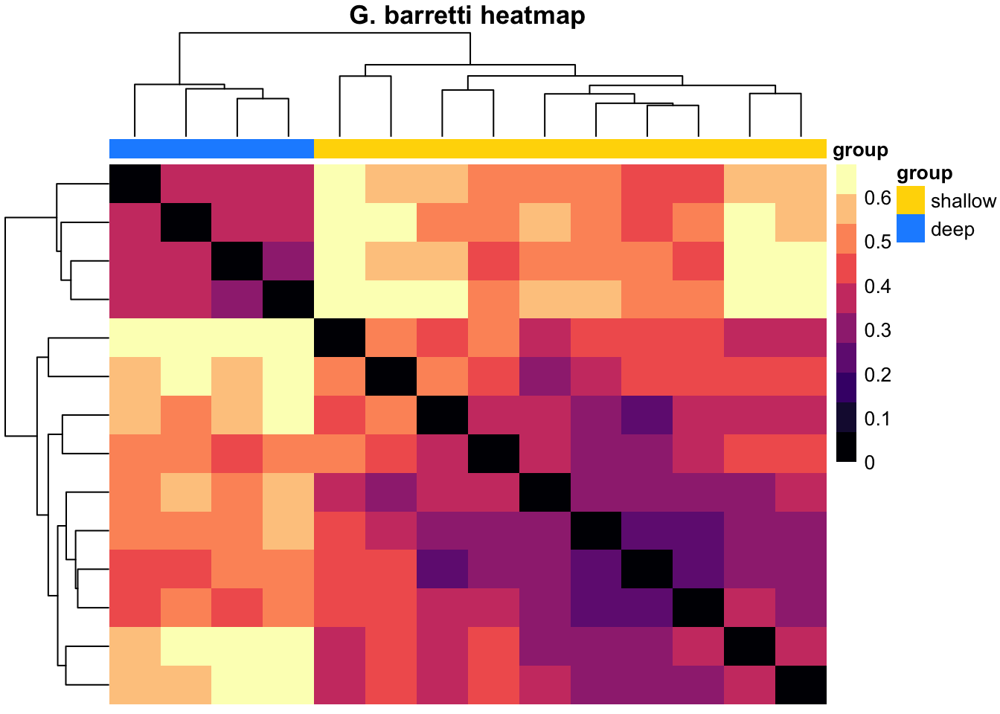
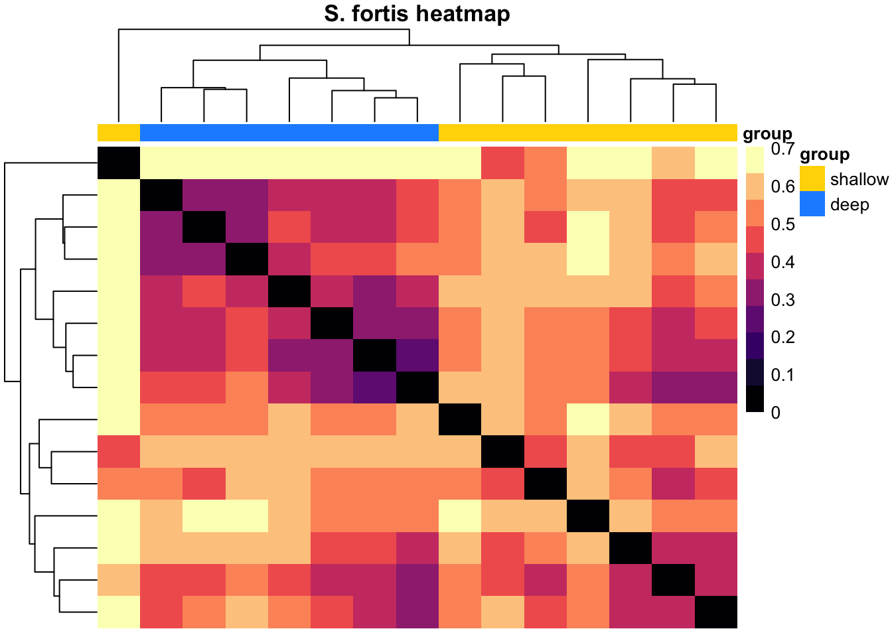
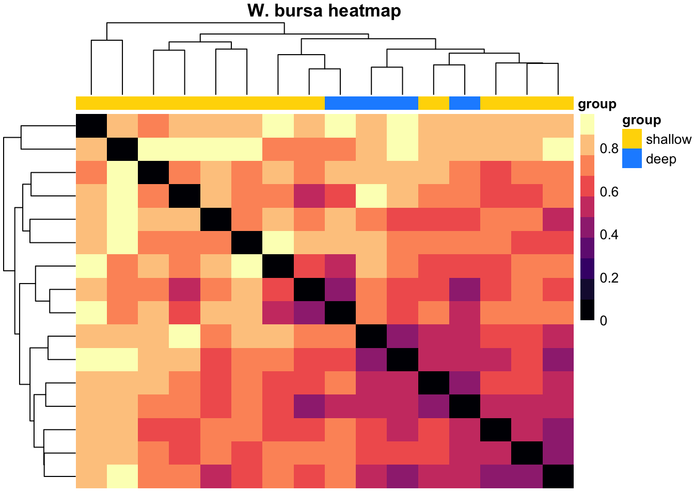

3 Microbiota
3.1 OTU table overview
Let’s start by taking a look at the OTU table and get an overall impression of our data.
library(tidyverse)
library(reshape2)
library(stringr)
library(ggplot2)
library(RColorBrewer)
library(forcats)
library(kableExtra)
options(kableExtra.html.bsTable = T)
library(gridExtra)
library(DT)
library(vegan)
library(phyloseq)
library(picante)
library(seqinr)
library(gtools)
# install.packages('webshot') webshot::install_phantomjs()
set.seed(1984)microbiome <- read.csv("data/OTU_all_R.csv", header = T, sep = ";")
meta_data <- read.csv("data/Steffen_et_al_metadata_PANGAEA.csv", header = T, sep = ";")
# meta_data <- meta_data[!str_sub(meta_data$unified_ID,1,2)=='QC',] # remove QC
# samples
meta_data <- meta_data[meta_data$unified_ID %in% microbiome$Sample_ID, ]
microbiome <- microbiome[order(microbiome$Sample_ID), ]
meta_data <- meta_data[order(meta_data$unified_ID), ]
# dropping factors from full data:
meta_data[] <- lapply(meta_data, function(x) if (is.factor(x)) factor(x) else x)
microbiome[] <- lapply(microbiome, function(x) if (is.factor(x)) factor(x) else x)
# all(meta_data$unified_ID==microbiome$Sample_ID)
rownames(microbiome) <- microbiome[, 1]
microbiome[, 1] <- NULL
microbiome["total_OTUs"] <- apply(microbiome, 1, sum) #total_OTUs = Cummulative read count
micro_fig1 <- data.frame(microbiome[, "total_OTUs"])
micro_fig1["unified_ID"] <- rownames(microbiome)
micro_fig1["normalisation"] <- "none"
microbiome$total_OTUs <- NULL
microbiome <- sqrt(microbiome)
microbiome["total_OTUs"] <- apply(microbiome, 1, sum)
micro_fig2 <- data.frame(microbiome[, "total_OTUs"])
micro_fig2["unified_ID"] <- rownames(microbiome)
micro_fig2["normalisation"] <- "sqrt"
microbiome$total_OTUs <- NULL
microbiome <- wisconsin(microbiome)
microbiome["total_OTUs"] <- apply(microbiome, 1, sum)
micro_fig3 <- data.frame(microbiome[, "total_OTUs"])
micro_fig3["unified_ID"] <- rownames(microbiome)
micro_fig3["normalisation"] <- "sqrt wisconsin"
micro_fig <- rbind(micro_fig1, micro_fig2, micro_fig3)
colnames(micro_fig) <- c("total_OTUs", "unified_ID", "normalisation")
micro_fig["Species"] <- str_sub(micro_fig$unified_ID, 1, 2)
ggplot(micro_fig, aes(x = unified_ID, y = total_OTUs)) + geom_bar(stat = "identity") +
facet_grid(vars(normalisation), vars(Species), scales = "free") + xlab("Samples") +
ylab("Number of OTUs") + ggtitle("Cummulative read count after normalisation") +
theme_bw() + theme(axis.text.x = element_text(angle = 90, hjust = 1))
Figure 3.1: Read count overview of the OTU table before and after the normalisation applied in the data analysis for this study.
Do the normalisations have affect how well we can discriminate between the microbiota?
microbiome <- read.csv("data/OTU_all_R.csv", header = T, sep = ";")
meta_data <- read.csv("data/Steffen_et_al_metadata_PANGAEA.csv", header = T, sep = ";")
meta_data <- meta_data[meta_data$unified_ID %in% microbiome$Sample_ID, ]
rownames(microbiome) <- microbiome[, 1]
microbiome[, 1] <- NULL
pca_plot <- function(microbiome, meta_data, my_title) {
micro.pca <- prcomp(microbiome, scale = T)
k <- summary(micro.pca)[["importance"]]
micro_pca_df <- data.frame(micro.pca$x) #scores, i.e. principal components of the sponge sample
micro_pca_df["unified_ID"] <- as.factor(rownames(micro_pca_df))
x1 <- paste("PC1", round(k[2, 1], digits = 3) * 100, "%")
y1 <- paste("PC2", round(k[2, 2], digits = 3) * 100, "%")
micro_pca_df <- left_join(micro_pca_df[, c("PC1", "PC2", "PC3", "unified_ID")],
meta_data[, c("Species", "Depth", "Latitude", "Longitude", "MeanBottomTemp_Cdeg",
"MeanBotSalinity_PSU", "unified_ID")])
p <- ggplot(micro_pca_df, aes(x = PC1, y = PC2)) + geom_point(size = 3, mapping = aes(shape = factor(Species))) +
ggtitle(my_title) + xlab(x1) + ylab(y1) + labs(shape = "Species") + theme_bw() +
theme(legend.position = "none")
return(p)
}
untransformed <- pca_plot(microbiome, meta_data, "untransformed")
sqrt_transformed <- pca_plot(sqrt(microbiome), meta_data, "sqrt")
sqrt_wisc_transformed <- pca_plot(wisconsin(sqrt(microbiome)), meta_data, "sqrt and wisconsin")
grid.arrange(untransformed, sqrt_transformed, sqrt_wisc_transformed, nrow = 1, top = "PCA: Impact of normalisation on discrimination of the microbiota")
Figure 3.2: PCA of the data sets with and without transformation/normalisation. Circles are Gb, triangles are Sf, squares are Wb
microbiome <- read.csv("data/OTU_all_R.csv", header = T, sep = ";")
meta_data <- read.csv("data/Steffen_et_al_metadata_PANGAEA.csv", header = T, sep = ";")
meta_data <- meta_data[meta_data$unified_ID %in% microbiome$Sample_ID, ]
rownames(microbiome) <- microbiome[, 1]
microbiome[, 1] <- NULL
nmds_plot <- function(microbiome, meta_data, my_title) {
micro.mds <- metaMDS(microbiome, k = 2, trymax = 100, distance = "bray", trace = FALSE)
nmds_points <- as.data.frame(micro.mds$points)
samples <- data.frame(nmds_points$MDS1, nmds_points$MDS2)
samples["unified_ID"] <- rownames(microbiome)
meta_data <- meta_data[, c("unified_ID", "Depth", "Species")]
samples <- left_join(samples, meta_data)
stress <- paste("Stress=", round(micro.mds$stress, digits = 3))
p <- ggplot(samples, aes(x = nmds_points.MDS1, y = nmds_points.MDS2)) + geom_point(aes(shape = Species,
alpha = 0.5), size = 4) + ggtitle(my_title) + labs(shape = "Sponge species") +
theme_bw() + theme(legend.position = "none") + xlab("NMDS 1") + ylab("NMDS 2") +
annotate("text", x = 0, y = 1, label = stress)
return(p)
}
untransformed <- nmds_plot(microbiome, meta_data, "untransformed")
sqrt_transformed <- nmds_plot(sqrt(microbiome), meta_data, "sqrt")
sqrt_wisc_transformed <- nmds_plot(wisconsin(sqrt(microbiome)), meta_data, "sqrt and wisconsin")
grid.arrange(untransformed, sqrt_transformed, sqrt_wisc_transformed, nrow = 1, top = "NMDS: Impact of normalisation on discrimination of the microbiota")
Figure 3.3: NMDS of the data sets with and without transformation/normalisation. Circles are Gb, triangles are Sf, squares are Wb
It seems that we don’t lose any relevant information and the normalisations in fact increase the discriminatory power.
3.2 Alpha diversity
The microbiota are composed of 420 OTUs in G. barretti, 461 OTUs in S. fortis and 135 OTUs in W. bursa. While G. barretti and S. fortis share 316, respectively they each only share 2 and 8 OTUs with W. bursa. Only a single OTU (OTU4 or X1969004, an Archaeon) is shared among the three sponge hosts.
How does that reflect in their diversities? Below we show Shannon diversity, species richness (SR) and Faith’s phylogenetic distance (PD).
library(vegan)
library(reshape2)
library(phyloseq)
library(picante)
microbiome <- read.csv("data/OTU_all_R.csv", header = T, sep = ";")
meta_data <- read.csv("data/Steffen_et_al_metadata_PANGAEA.csv", header = T, sep = ";")
taxonomy <- read.csv("data/microbiome_taxonomy.csv", header = T, sep = ";")
tree <- read.nexus("data/infile.nex.con.X.tre")
rownames(microbiome) <- microbiome$Sample_ID
microbiome$Sample_ID <- NULL
otumat <- t(microbiome)
otumat <- wisconsin(sqrt(otumat))
colnames(otumat) <- rownames(microbiome)
rownames(taxonomy) <- paste0("X", taxonomy$OTU_ID)
taxonomy$OTU_ID <- NULL
# all(rownames(taxonomy)==rownames(otumat))
# relative abundance
otumat <- apply(otumat, 2, function(i) i/sum(i))
OTU <- otu_table(otumat, taxa_are_rows = TRUE)
# remove low abundance taxa OTU <- filter_taxa(OTU, function(x) mean(x) > 0.0025,
# TRUE)
taxmat <- as.matrix(taxonomy)
TAX <- tax_table(taxmat)
biom_data <- phyloseq(OTU, TAX)
# Merge into phyloseq object
pso <- merge_phyloseq(biom_data, tree) #merging a phyloseq and a tree file
pso <- prune_taxa(taxa_sums(pso) > 0, pso)
# Calculate Phylogenetic Distance (PD) of the dataset, ALPHA DIVERSITY
otu_table_pso <- as.data.frame(pso@otu_table)
df.pd <- pd(t(otu_table_pso), tree, include.root = F)
df.pd["unified_ID"] <- rownames(df.pd)
# df.pd: PD = Faith's Phylogenetic diversity, SR= species richness
div <- as.data.frame(diversity(t(otumat), index = "shannon"))
div["spec"] <- str_sub(rownames(div), 1, 2)
colnames(div) <- c("Shannon_diversity", "spec")
div["unified_ID"] <- rownames(div)
div_indices <- full_join(div, df.pd)
md <- meta_data[, c("unified_ID", "Depth")]
div_indices <- left_join(div_indices, md)
div_indices <- reshape2::melt(div_indices, id.vars = c("spec", "unified_ID", "Depth"))
ggplot(div_indices, aes(x = Depth, y = value)) + geom_point() + facet_grid(vars(variable),
vars(spec), scales = "free") + theme(axis.text.x = element_text(angle = -90,
vjust = 0.5, hjust = 1), legend.position = "none") + ylab("Diversity metrics") +
xlab("Sample depth") + theme_bw()
Figure 3.4: Microbiota diversity indices grouped by sponge species and ordered by sample depth.
We see that the HMA sponges G. barretti and S. fortis not only have more OTUs but also a higher diversity in their prokaryotic communities then the LMA sponge W. bursa.
3.3 Beta diversity
In a way, the Fig. 3.2 and 3.3 have already shown us the beta diversity in our samples. Looking more into the data, we found that the two dimensional representation can be misleading at times and so we provide the first three axes components for exploration below.
library(plot3D)
library(rgl)
library(plotly)
### PCA
microbiome <- read.csv("data/OTU_all_R.csv", header = T, sep = ";")
meta_data <- read.csv("data/Steffen_et_al_metadata_PANGAEA.csv", header = T, sep = ";")
meta_data <- meta_data[meta_data$unified_ID %in% microbiome$Sample_ID, ]
rownames(microbiome) <- microbiome[, 1]
microbiome[, 1] <- NULL
microbiome <- sqrt(microbiome)
micro.pca <- prcomp(microbiome, scale = T)
k <- summary(micro.pca)[["importance"]]
micro_pca_df <- data.frame(micro.pca$x) #scores, i.e. principal components of the sponge sample
micro_pca_df["unified_ID"] <- as.factor(rownames(micro_pca_df))
x1 <- paste("PC1", round(k[2, 1], digits = 3) * 100, "%")
y1 <- paste("PC2", round(k[2, 2], digits = 3) * 100, "%")
z1 <- paste("PC3", round(k[2, 3], digits = 3) * 100, "%")
micro_pca_df <- left_join(micro_pca_df[, c("PC1", "PC2", "PC3", "unified_ID")], meta_data[,
c("Species", "Depth", "Latitude", "Longitude", "MeanBottomTemp_Cdeg", "MeanBotSalinity_PSU",
"unified_ID")])
## rgl/plot3D: static 3D plot with(micro_pca_df, text3D(PC1, PC2, PC3, colvar =
## micro_pca_df$Depth, theta = 60, phi = 20, xlab = x1, ylab = y1, zlab =z1, main
## = '3D microbiome PCA', labels = micro_pca_df$unified_ID, cex = 0.9, bty = 'g',
## ticktype = 'detailed', d = 2, clab = c('Depth [m]'), adj = 0.5, font = 2))
## plotly
axx <- list(backgroundcolor = "rgb(211,211,211)", gridcolor = "rgb(255,255,255)",
title = x1, showbackground = TRUE)
axy <- list(backgroundcolor = "rgb(211,211,211)", gridcolor = "rgb(255,255,255)",
title = y1, showbackground = TRUE)
axz <- list(backgroundcolor = "rgb(211,211,211)", gridcolor = "rgb(255,255,255)",
title = z1, showbackground = TRUE)
mic_i <- plot_ly(micro_pca_df, x = ~micro_pca_df$PC1, y = ~micro_pca_df$PC2, z = ~micro_pca_df$PC3,
symbol = ~Species, symbols = c("diamond", "x", "circle"), color = ~micro_pca_df$Depth) %>%
add_markers() %>% layout(scene = list(xaxis = axx, yaxis = axy, zaxis = axz))
mic_iFigure 3.5: PCA of the met
# for saving locally f<- basename(tempfile('PCA_microbiome_plotly', '.',
# '.html')) on.exit(unlink(f), add = TRUE) html <- htmlwidgets::saveWidget(mic_i,
# f)
rm(mic_i, f, html, k, x1, y1, z1, micro.pca, axx, axy, axz, micro_pca_df)library(plot3D)
library(rgl)
library(plotly)
### NMDS
microbiome <- read.csv("data/OTU_all_R.csv", header = T, sep = ";")
meta_data <- read.csv("data/Steffen_et_al_metadata_PANGAEA.csv", header = T, sep = ";")
meta_data <- meta_data[meta_data$unified_ID %in% microbiome$Sample_ID, ]
rownames(microbiome) <- microbiome[, 1]
microbiome[, 1] <- NULL
# microbiome <- sqrt(microbiome)
micro.mds <- metaMDS(microbiome, k = 3, trymax = 100, distance = "bray", trace = FALSE)
nmds_points <- as.data.frame(micro.mds$points)
samples <- data.frame(nmds_points$MDS1, nmds_points$MDS2, nmds_points$MDS3)
samples["unified_ID"] <- rownames(microbiome)
meta_data <- meta_data[, c("unified_ID", "Depth", "Species")]
samples <- left_join(samples, meta_data)
colnames(samples) <- c("PC1", "PC2", "PC3", "unified_ID", "Depth", "Species")
stress <- paste("Stress=", round(micro.mds$stress, digits = 6))
x1 <- c("MDS1")
y1 <- c("MDS2")
z1 <- c("MDS3")
# rgl/plot3D with(samples, text3D(PC1, PC2, PC3, colvar = samples$Depth, theta =
# 60, phi = 20, xlab = x1, ylab = y1, zlab =z1, main = '3D microbiome NMDS',
# labels = samples$unified_ID, cex = 0.9, bty = 'g', ticktype = 'detailed', d =
# 2, clab = c('Depth [m]'), adj = 0.5, font = 2))
## plotly
axx <- list(backgroundcolor = "rgb(211,211,211)", gridcolor = "rgb(255,255,255)",
title = x1, showbackground = TRUE)
axy <- list(backgroundcolor = "rgb(211,211,211)", gridcolor = "rgb(255,255,255)",
title = y1, showbackground = TRUE)
axz <- list(backgroundcolor = "rgb(211,211,211)", gridcolor = "rgb(255,255,255)",
title = z1, showbackground = TRUE)
mic_i <- plot_ly(samples, x = ~samples$PC1, y = ~samples$PC2, z = ~samples$PC3, symbol = ~Species,
symbols = c("diamond", "x", "circle"), color = samples$Depth) %>% add_markers() %>%
layout(scene = list(xaxis = axx, yaxis = axy, zaxis = axz))
mic_iFigure 3.6: NMDS based on Bray-Curtis dissimilarity.
# for saving locally f<- basename(tempfile('NMDS_microbiome_plotly', '.',
# '.html')) on.exit(unlink(f), add = TRUE) html <- htmlwidgets::saveWidget(mic_i,
# f)
rm(mic_i, f, html, k, x1, y1, z1, micro.mds, axx, axy, axz, samples, nmds_points)NMDS Stress= 8.6e-05.
In some of the downstream analyses, we distinguish between common/abundant OTUs and rare OTUs. We use a cutoff of 0.25% average relative abundance per OTU for the classification. That implies drastically modifying the original numbers of OTUs per sponge as outlined below.
micro <- read.csv("data/OTU_all_R.csv", header = T, sep = ";")
emp <- read.csv("data/SpongeEMP.csv", header = T, sep = ";")
emp["XOTU_id"] <- str_replace(emp$OTU_ID, "OTU", "X196900")
# The full data set had the entries listed by sponge host, so there are 62
# duplicates in the OTU list length(emp$XOTU_id) # 207
# length(unique(emp$XOTU_id)) # 145
emp["num"] <- as.numeric(str_replace(emp$OTU_ID, "OTU", ""))
emp <- emp[order(emp$num), ]
emp["dup"] <- duplicated(emp$num)
# dim(emp[emp$dup=='TRUE',]) #62
emp <- emp[emp$dup == "FALSE", ]
emp[, c("sponge", "num", "dup")] <- list(NULL)
OTU_prep_sqrt <- function(micro) {
rownames(micro) <- micro$Sample_ID
micro$Sample_ID <- NULL
# micro <- sqrt(micro)
micro_gb <- micro[(str_sub(rownames(micro), 1, 2) == "Gb"), ]
micro_sf <- micro[(str_sub(rownames(micro), 1, 2) == "Sf"), ]
micro_wb <- micro[(str_sub(rownames(micro), 1, 2) == "Wb"), ]
micro_gb <- micro_gb[, colSums(micro_gb != 0) > 0] #removes columns that only contain 0
micro_sf <- micro_sf[, colSums(micro_sf != 0) > 0]
micro_wb <- micro_wb[, colSums(micro_wb != 0) > 0]
micros <- list(gb = micro_gb, sf = micro_sf, wb = micro_wb)
return(micros)
}
micro_ds <- OTU_prep_sqrt(micro)
overall_rabdc <- function(micro) {
mic <- micro
n <- 0
k <- dim(mic)[1]
mic["rowsum"] <- apply(mic, 1, sum)
while (n < k) {
n <- n + 1
mic[n, ] <- mic[n, ]/(mic$rowsum[n])
}
mic$rowsum <- NULL
mic <- data.frame(t(mic))
mic["avg_rel_abdc"] <- apply(mic, 1, mean)
mic["occurrence"] <- ifelse(mic$avg > 0.0025, "common", "rare")
return(mic)
}
gb_occurrence <- overall_rabdc(micro_ds$gb)
sf_occurrence <- overall_rabdc(micro_ds$sf)
wb_occurrence <- overall_rabdc(micro_ds$wb)
gb_occurrence <- gb_occurrence[, c("avg_rel_abdc", "occurrence")]
gb_occurrence["XOTU_id"] <- rownames(gb_occurrence)
gb_occ_emp <- left_join(gb_occurrence, emp)
sf_occurrence <- sf_occurrence[, c("avg_rel_abdc", "occurrence")]
sf_occurrence["XOTU_id"] <- rownames(sf_occurrence)
sf_occ_emp <- left_join(sf_occurrence, emp)
wb_occurrence <- wb_occurrence[, c("avg_rel_abdc", "occurrence")]
wb_occurrence["XOTU_id"] <- rownames(wb_occurrence)
wb_occ_emp <- left_join(wb_occurrence, emp)
gb_aggr <- aggregate(gb_occ_emp$avg_rel_abdc, by = list(gb_occ_emp$occurrence), FUN = "length")
sf_aggr <- aggregate(sf_occ_emp$avg_rel_abdc, by = list(sf_occ_emp$occurrence), FUN = "length")
wb_aggr <- aggregate(wb_occ_emp$avg_rel_abdc, by = list(wb_occ_emp$occurrence), FUN = "length")
aggr <- cbind(gb_aggr, sf_aggr$x, wb_aggr$x)
colnames(aggr) <- c("OTU classification", "count Gb", "count Sf", "count Wb")
options(kableExtra.html.bsTable = T)
kable(aggr, col.names = c("OTU classification", "count (Gb)", "count (Sf)", "count (Wb)"),
booktabs = T, caption = "Number of OTUs being excluded and retained in the three sponges' microbiota when filtering for average relative abundance > 0.25%.",
row.names = FALSE) %>% kable_styling(bootstrap_options = c("hover", "bordered",
"condensed", "responsive"), full_width = F, latex_options = c("scale_down"))| OTU classification | count (Gb) | count (Sf) | count (Wb) |
|---|---|---|---|
| common | 96 | 89 | 20 |
| rare | 324 | 372 | 115 |
That means, for G. barretti we exclude 77.1 % of OTUs, for S. fortis 80.7 % and for W. bursa 85.2%.
gb_common <- gb_occ_emp[gb_occ_emp$occurrence == "common", ]
sf_common <- sf_occ_emp[sf_occ_emp$occurrence == "common", ]
wb_common <- wb_occ_emp[wb_occ_emp$occurrence == "common", ]
gb_aggr <- aggregate(gb_common$avg_rel_abdc, by = list(gb_common$spongeEMP_enriched),
FUN = "length")
sf_aggr <- aggregate(sf_common$avg_rel_abdc, by = list(sf_common$spongeEMP_enriched),
FUN = "length")
wb_aggr <- aggregate(wb_common$avg_rel_abdc, by = list(wb_common$spongeEMP_enriched),
FUN = "length")
aggr <- cbind(gb_aggr, sf_aggr$x)
aggr <- left_join(aggr, wb_aggr, by = "Group.1")
colnames(aggr) <- c("EMP OTU count", "Gb", "Sf", "Wb")
options(kableExtra.html.bsTable = T)
kable(aggr, col.names = c("OTU classification", "count (Gb)", "count (Sf)", "count (Wb)"),
booktabs = T, caption = "Number of common/abundant OTUs found in the SpongeEMP data base",
row.names = FALSE) %>% kable_styling(bootstrap_options = c("hover", "bordered",
"condensed", "responsive"), full_width = F, latex_options = c("scale_down"))| OTU classification | count (Gb) | count (Sf) | count (Wb) |
|---|---|---|---|
| no | 23 | 25 | 9 |
| yes | 72 | 64 | 11 |
3.4 Environmental modelling
In order to investigate whether and which of the environmental parameter might “explain”/correlate with variation the the microbiota, we apply constrained and unconstrained ecological data analysis methods.
3.4.1 Constrained modelling approach Automatic stepwise model building
We use canonical correspondence analysis as method for ordination. According to the manual for the R package vegan, “a good dissimilarity index for multidimensional scaling should have a high rank-order similarity with gradient separation” (Oksanen et al. 2019). Thus interpreting the results of Tab 3.3, we find that square root transformation and Wisconsin standardisation increase the rank correlation between the microbial community dissimilarity matrix and the environmental gradient separation in all three sponge microbiota for a number of ecological dissimilarity indices.
library(vegan)
microbiome <- read.csv("data/OTU_all_R.csv", header = T, sep = ";")
meta_data <- read.csv("data/Steffen_et_al_metadata_PANGAEA.csv", header = T, sep = ";")
meta_data <- meta_data[meta_data$unified_ID %in% microbiome$Sample_ID, ]
# Gb12 has no salinity and temperature: impute from Gb11 & Gb13: Salinity:34.92;
# Temp:3.59
row <- which(meta_data$unified_ID == "Gb12")
temp <- which(colnames(meta_data) == "MeanBottomTemp_Cdeg")
sal <- which(colnames(meta_data) == "MeanBotSalinity_PSU")
meta_data[row, temp] <- 3.59
meta_data[row, sal] <- 34.92
rm(row, temp, sal)
OTU_prep_sqrt <- function(micro) {
rownames(micro) <- micro$Sample_ID
micro$Sample_ID <- NULL
micro <- sqrt(micro)
micro_gb <- micro[(str_sub(rownames(micro), 1, 2) == "Gb"), ]
micro_sf <- micro[(str_sub(rownames(micro), 1, 2) == "Sf"), ]
micro_wb <- micro[(str_sub(rownames(micro), 1, 2) == "Wb"), ]
micro_gb <- micro_gb[, colSums(micro_gb != 0) > 0]
micro_sf <- micro_sf[, colSums(micro_sf != 0) > 0]
micro_wb <- micro_wb[, colSums(micro_wb != 0) > 0]
micros <- list(gb = micro_gb, sf = micro_sf, wb = micro_wb)
return(micros)
}
microbiomes <- OTU_prep_sqrt(microbiome)
md_prep <- function(microbiomes, meta_data) {
meta_data <- meta_data[, c("unified_ID", "Depth", "Latitude", "Longitude", "MeanBottomTemp_Cdeg",
"MeanBotSalinity_PSU", "YEAR")]
gb <- microbiomes$gb
sf <- microbiomes$sf
wb <- microbiomes$wb
gb_md <- meta_data[meta_data$unified_ID %in% rownames(gb), ]
rownames(gb_md) <- gb_md$unified_ID
gb_md <- gb_md[order(gb_md$unified_ID), ]
all(rownames(microbiomes$gb) == rownames(gb_md))
gb_md <- gb_md[, c("Depth", "Latitude", "Longitude", "MeanBottomTemp_Cdeg", "MeanBotSalinity_PSU",
"YEAR")]
sf_md <- meta_data[meta_data$unified_ID %in% rownames(sf), ]
rownames(sf_md) <- sf_md$unified_ID
sf_md <- sf_md[order(sf_md$unified_ID), ]
sf_md$unified_ID <- NULL
wb_md <- meta_data[meta_data$unified_ID %in% rownames(wb), ]
rownames(wb_md) <- wb_md$unified_ID
wb_md <- wb_md[order(wb_md$unified_ID), ]
wb_md$unified_ID <- NULL
mds <- list(gb_md = gb_md, sf_md = sf_md, wb_md = wb_md)
return(mds)
}
mds <- md_prep(microbiomes, meta_data)
# Standardization If there is a large difference between smallest non-zero
# abundance and largest abundance, we want to reduce this difference. Usually
# square root transformation is sufficient to balance the data. Wisconsin double
# standardization often improves the gradient detection ability of dissimilarity
# indices.
# Which dissimilarity index is best?
gb_ri1 <- rankindex(scale(mds$gb_md), (microbiomes$gb)^2, c("euc", "man", "bray",
"jac", "kul")) #unstandardized
gb_ri2 <- rankindex(scale(mds$gb_md), microbiomes$gb, c("euc", "man", "bray", "jac",
"kul")) #sqrt
gb_ri3 <- rankindex(scale(mds$gb_md), wisconsin(microbiomes$gb), c("euc", "man",
"bray", "jac", "kul")) #sqrt and wisconsin
sf_ri1 <- rankindex(scale(mds$sf_md), (microbiomes$sf)^2, c("euc", "man", "bray",
"jac", "kul"))
sf_ri2 <- rankindex(scale(mds$sf_md), microbiomes$sf, c("euc", "man", "bray", "jac",
"kul"))
sf_ri3 <- rankindex(scale(mds$sf_md), wisconsin(microbiomes$sf), c("euc", "man",
"bray", "jac", "kul"))
wb_ri1 <- rankindex(scale(mds$wb_md), (microbiomes$wb)^2, c("euc", "man", "bray",
"jac", "kul"))
wb_ri2 <- rankindex(scale(mds$wb_md), microbiomes$wb, c("euc", "man", "bray", "jac",
"kul"))
wb_ri3 <- rankindex(scale(mds$wb_md), wisconsin(microbiomes$wb), c("euc", "man",
"bray", "jac", "kul"))
rankindices <- rbind(gb_ri1, gb_ri2, gb_ri3, sf_ri1, sf_ri2, sf_ri3, wb_ri1, wb_ri2,
wb_ri3)
rankindices <- as.data.frame(rankindices)
rankindices["Sponge species"] <- c(rep("G. barretti", 3), rep("S. fortis", 3), rep("W. bursa",
3))
rankindices["Normalisation"] <- c(rep(c("none", "sqrt", "sqrt & wisconsin"), 3))
options(kableExtra.html.bsTable = T)
kable(rankindices, col.names = c("Euclidean", "Manhattan", "Bray–Curtis", "Jaccard",
"Kulczynski", "Sponge species", "Normalisation"), booktabs = T, caption = "Rank correlation between dissimilarity indices and gradient separation. The higher the number the stronger the correlation, i.e. the better the fit.",
row.names = FALSE) %>% kable_styling(bootstrap_options = c("striped", "hover",
"bordered", "condensed", "responsive"), full_width = F, latex_options = c("striped",
"scale_down"))| Euclidean | Manhattan | Bray–Curtis | Jaccard | Kulczynski | Sponge species | Normalisation |
|---|---|---|---|---|---|---|
| -0.0512024 | -0.0445135 | 0.3979615 | 0.3979615 | 0.4509158 | G. barretti | none |
| 0.0930562 | 0.1658067 | 0.3967033 | 0.3967033 | 0.4010193 | G. barretti | sqrt |
| 0.4072305 | 0.4026915 | 0.4026915 | 0.4026915 | 0.4026915 | G. barretti | sqrt & wisconsin |
| 0.0816401 | 0.1826975 | 0.3111549 | 0.3111549 | 0.4108128 | S. fortis | none |
| 0.3285092 | 0.3476778 | 0.4620775 | 0.4620775 | 0.4877255 | S. fortis | sqrt |
| 0.5056811 | 0.5471905 | 0.5471905 | 0.5471905 | 0.5471905 | S. fortis | sqrt & wisconsin |
| 0.0280922 | 0.0994375 | 0.0008681 | 0.0008681 | 0.0048476 | W. bursa | none |
| 0.0376971 | 0.4854434 | 0.2801306 | 0.2801306 | 0.2656573 | W. bursa | sqrt |
| -0.0833252 | 0.3617890 | 0.3617890 | 0.3617890 | 0.3617890 | W. bursa | sqrt & wisconsin |
We adapt the microbial data sets accordingly applying square root transformation and Wisconsin standardisation of the microbiota in all subsequent ecological analyses. Then, we build a model (null model) without any environmental parameters, and one (full model) with the maximum number of environmental parameters (terms) possible so that none of them have a VIF > 10. Finally, we use the stepwise model building function ordistep to determine, which of the environmental parameters is a significant constraint for the microbiomes. The function compares the null model and adds and removes terms from the full model to find (combinations of) significant constraints. The significance of the parameters is then tested in an ANOVA.
G. barretti: first the VIFs of all terms included in the full model, second the result of the stepwise model building, third the ANOVA of the suggested model.
# mod0 has no terms, intercept only mod1 includes all terms possible with a VIF <
# 10. Available: 'Depth', 'Latitude', 'Longitude', 'MeanBottomTemp_Cdeg',
# 'MeanBotSalinity_PSU', 'YEAR'
## Gb
mod0 <- cca(wisconsin(microbiomes$gb) ~ 1, mds$gb_md)
mod1 <- cca(wisconsin(microbiomes$gb) ~ Depth + Latitude + MeanBottomTemp_Cdeg +
YEAR, mds$gb_md)
vif.cca(mod1)## Depth Latitude MeanBottomTemp_Cdeg YEAR
## 1.230382 1.775034 1.929029 1.651565## Df AIC F Pr(>F)
## + Depth 1 6.7097 3.4066 0.005 **
## ---
## Signif. codes: 0 '***' 0.001 '**' 0.01 '*' 0.05 '.' 0.1 ' ' 1## Permutation test for cca under reduced model
## Permutation: free
## Number of permutations: 999
##
## Model: cca(formula = wisconsin(microbiomes$gb) ~ Depth, data = mds$gb_md)
## Df ChiSquare F Pr(>F)
## Model 1 0.34451 3.4066 0.001 ***
## Residual 12 1.21355
## ---
## Signif. codes: 0 '***' 0.001 '**' 0.01 '*' 0.05 '.' 0.1 ' ' 1S. fortis: first the VIFs of all terms included in the full model, second the result of the stepwise model building, third the ANOVA of the suggested model.
## Sf
mod0 <- cca(wisconsin(microbiomes$sf) ~ 1, mds$sf_md)
mod1 <- cca(wisconsin(microbiomes$sf) ~ Depth + Latitude + YEAR + MeanBotSalinity_PSU +
Longitude, mds$sf_md)
vif.cca(mod1)## Depth Latitude YEAR MeanBotSalinity_PSU
## 4.218950 5.079261 1.082453 3.648340
## Longitude
## 5.071690## Df AIC F Pr(>F)
## + Depth 1 13.547 2.1462 0.005 **
## ---
## Signif. codes: 0 '***' 0.001 '**' 0.01 '*' 0.05 '.' 0.1 ' ' 1## Permutation test for cca under reduced model
## Permutation: free
## Number of permutations: 999
##
## Model: cca(formula = wisconsin(microbiomes$sf) ~ Depth, data = mds$sf_md)
## Df ChiSquare F Pr(>F)
## Model 1 0.31199 2.1462 0.001 ***
## Residual 13 1.88978
## ---
## Signif. codes: 0 '***' 0.001 '**' 0.01 '*' 0.05 '.' 0.1 ' ' 1W. bursa: first the VIFs of all terms included in the full model, second the result of the stepwise model building, third the ANOVA of the suggested model.
## Wb
mod0 <- cca(wisconsin(microbiomes$wb) ~ 1, mds$wb_md)
mod1 <- cca(wisconsin(microbiomes$wb) ~ Depth + Latitude + MeanBottomTemp_Cdeg +
YEAR, mds$wb_md)
vif.cca(mod1)## Depth Latitude MeanBottomTemp_Cdeg YEAR
## 2.216302 1.217879 2.402357 1.153565## Df AIC F Pr(>F)
## + Depth 1 25.701 1.6576 0.005 **
## + Latitude 1 25.993 1.4649 0.030 *
## ---
## Signif. codes: 0 '***' 0.001 '**' 0.01 '*' 0.05 '.' 0.1 ' ' 1## Permutation test for cca under reduced model
## Permutation: free
## Number of permutations: 999
##
## Model: cca(formula = wisconsin(microbiomes$wb) ~ Depth + Latitude, data = mds$wb_md)
## Df ChiSquare F Pr(>F)
## Model 2 0.8527 1.5888 0.001 ***
## Residual 13 3.4888
## ---
## Signif. codes: 0 '***' 0.001 '**' 0.01 '*' 0.05 '.' 0.1 ' ' 1For all G. barretti and S. fortis depth is a significant constraint of the microbial community. For W. bursa we find temperature to be a significant constraint.
3.4.2 Unconstrained modelling approach
In an alternative approach, we fit environmental vectors onto an ordination of the microbiota. This method allows to include all environmental parameters (regardless of collinearity). Length of the arrow indicates strength of the predictor (environmental parameter).
set.seed(1984)
microbiome <- read.csv("data/OTU_all_R.csv", header = T, sep = ";")
meta_data <- read.csv("data/Steffen_et_al_metadata_PANGAEA.csv", header = T, sep = ";")
meta_data <- meta_data[meta_data$unified_ID %in% microbiome$Sample_ID, ]
row <- which(meta_data$unified_ID == "Gb12")
temp <- which(colnames(meta_data) == "MeanBottomTemp_Cdeg")
sal <- which(colnames(meta_data) == "MeanBotSalinity_PSU")
meta_data[row, temp] <- 3.59
meta_data[row, sal] <- 34.92
rm(row, temp, sal)
microbiomes <- OTU_prep_sqrt(microbiome)
mds <- md_prep(microbiomes, meta_data)
colnames(mds$gb_md) <- c("Depth", "Lat", "Lon", "Temp", "Sal", "Year")
colnames(mds$sf_md) <- c("Depth", "Lat", "Lon", "Temp", "Sal", "Year")
colnames(mds$wb_md) <- c("Depth", "Lat", "Lon", "Temp", "Sal", "Year")
# Gb
dist_micro <- vegdist(wisconsin(microbiomes$gb)) #distance matrix
ordi_micro <- metaMDS(dist_micro, trace = F) # ordination
ef <- envfit(ordi_micro, mds$gb_md, permutations = 999) # fitting arrows; STRATA?
ef##
## ***VECTORS
##
## NMDS1 NMDS2 r2 Pr(>r)
## Depth 0.96701 -0.25474 0.8945 0.001 ***
## Lat 0.16703 0.98595 0.1627 0.411
## Lon 0.77996 0.62583 0.4251 0.047 *
## Temp -0.00596 -0.99998 0.2302 0.240
## Sal 0.70615 -0.70806 0.5171 0.025 *
## Year 0.53961 0.84192 0.1444 0.418
## ---
## Signif. codes: 0 '***' 0.001 '**' 0.01 '*' 0.05 '.' 0.1 ' ' 1
## Permutation: free
## Number of permutations: 999# r Goodness of fit statistic: Squared correlation coefficient I will report r^2
# i.e. goodness of fit rather than correlaiton because correlation with a
# distance matrix is not meaningful for understanding
plot(ordi_micro, display = "sites") #plot
plot(ef, p.max = 0.05) #arrows
Figure 3.7: Fitting significant (p<0.05) environmental vectors onto ordination of G. barretti microbiome.
set.seed(1984)
dist_micro <- vegdist(wisconsin(microbiomes$sf)) # distance matrix
ordi_micro <- metaMDS(dist_micro, trace = F) # ordination
ef <- envfit(ordi_micro, mds$sf_md, permutations = 999) # fitting arrows
ef##
## ***VECTORS
##
## NMDS1 NMDS2 r2 Pr(>r)
## Depth 0.84791 0.53014 0.6976 0.002 **
## Lat 0.13416 0.99096 0.1261 0.393
## Lon 0.68725 0.72642 0.6101 0.007 **
## Temp -0.09375 -0.99560 0.3200 0.107
## Sal 0.84644 -0.53249 0.1908 0.258
## Year 0.96551 0.26038 0.0114 0.932
## ---
## Signif. codes: 0 '***' 0.001 '**' 0.01 '*' 0.05 '.' 0.1 ' ' 1
## Permutation: free
## Number of permutations: 999
Figure 3.8: Fitting significant (p<0.05) environmental vectors onto ordination of S. fortis microbiome.
set.seed(1984)
dist_micro <- vegdist(wisconsin(microbiomes$wb)) # distance matrix
ordi_micro <- metaMDS(dist_micro, trace = F) # ordination
ef <- envfit(ordi_micro, mds$wb_md, permutations = 999) # fitting arrows
ef##
## ***VECTORS
##
## NMDS1 NMDS2 r2 Pr(>r)
## Depth 0.15403 0.98807 0.7720 0.001 ***
## Lat 0.73298 0.68025 0.2144 0.196
## Lon 0.28260 0.95924 0.5937 0.006 **
## Temp 0.14099 0.99001 0.7231 0.003 **
## Sal 0.21497 0.97662 0.8490 0.001 ***
## Year -0.21466 -0.97669 0.0422 0.749
## ---
## Signif. codes: 0 '***' 0.001 '**' 0.01 '*' 0.05 '.' 0.1 ' ' 1
## Permutation: free
## Number of permutations: 999
Figure 3.9: Fitting significant (p<0.05) environmental vectors onto ordination of W. bursa microbiome.
3.4.3 Hierarchical clustering
So far, we’ve treated depth as a linear variable. With these clustering method, we’re asking whether there are particular groups standing out.
## Clustering
par(mfrow = c(1, 3))
dist_micro <- vegdist(wisconsin(microbiomes$gb)) #distance matrix
clua <- hclust(dist_micro, "average") #average= UPGMA
plot(clua, sub = "Gb", xlab = "UPGMA")
rect.hclust(clua, 2)
grp1 <- cutree(clua, 2)
dist_micro <- vegdist(wisconsin(microbiomes$sf)) #distance matrix
clua <- hclust(dist_micro, "average") #average= UPGMA
plot(clua, sub = "Sf", xlab = "UPGMA")
grp2 <- cutree(clua, 2)
dist_micro <- vegdist(wisconsin(microbiomes$wb)) #distance matrix
clua <- hclust(dist_micro, "average") #average= UPGMA
plot(clua, sub = "Wb", xlab = "UPGMA")
Figure 3.10: Hclust
grp3 <- cutree(clua, 2)
par(mfrow = c(1, 1))
# ord <- cca(wisconsin(microbiomes$gb)) plot(ord, display = 'sites')
# ordihull(ord, grp1, lty = 2, col = 'red')
# ord <- cca(wisconsin(microbiomes$sf)) plot(ord, display = 'sites')
# ordihull(ord, grp2, lty = 2, col = 'red')
# ord <- cca(wisconsin(microbiomes$wb)) plot(ord, display = 'sites')
# ordihull(ord, grp3, lty = 2, col = 'red')library(pheatmap)
library(RColorBrewer)
library(viridis)
microbiome <- read.csv("data/OTU_all_R.csv", header = T, sep = ";")
meta_data <- read.csv("data/Steffen_et_al_metadata_PANGAEA.csv", header = T, sep = ";")
meta_data <- meta_data[meta_data$unified_ID %in% microbiome$Sample_ID, ]
micro_ds <- OTU_prep_sqrt(microbiome)
mds <- md_prep(microbiomes, meta_data)
gb_md <- mds$gb_md
sf_md <- mds$sf_md
wb_md <- mds$wb_md
gb_md["depth_category"] <- ifelse(gb_md$Depth < 1000, "shallow", "deep")
sf_md["depth_category"] <- ifelse(sf_md$Depth < 1000, "shallow", "deep")
wb_md["depth_category"] <- ifelse(wb_md$Depth < 1000, "shallow", "deep")
k <- vegdist(wisconsin(micro_ds$gb))
mat_col <- data.frame(group = gb_md$depth_category)
rownames(mat_col) <- rownames(micro_ds$gb)
col_groups <- gb_md$depth_category
mat_colors <- list(group = c("gold", "dodgerblue"))
names(mat_colors$group) <- unique(col_groups)
pheatmap(k, color = magma(10), border_color = NA, show_colnames = FALSE, show_rownames = FALSE,
annotation_col = mat_col, annotation_colors = mat_colors, drop_levels = TRUE,
fontsize = 10, main = "G. barretti heatmap")
k <- vegdist(wisconsin(micro_ds$sf))
mat_col <- data.frame(group = sf_md$depth_category)
rownames(mat_col) <- rownames(micro_ds$sf)
col_groups <- sf_md$depth_category
mat_colors <- list(group = c("gold", "dodgerblue"))
names(mat_colors$group) <- unique(col_groups)
pheatmap(k, color = magma(10), border_color = NA, show_colnames = FALSE, show_rownames = FALSE,
annotation_col = mat_col, annotation_colors = mat_colors, drop_levels = TRUE,
fontsize = 10, main = "S. fortis heatmap")
k <- vegdist(wisconsin(micro_ds$wb))
mat_col <- data.frame(group = wb_md$depth_category)
rownames(mat_col) <- rownames(micro_ds$wb)
col_groups <- wb_md$depth_category
mat_colors <- list(group = c("gold", "dodgerblue"))
names(mat_colors$group) <- unique(col_groups)
pheatmap(k, color = magma(10), border_color = NA, show_colnames = TRUE, show_rownames = TRUE,
annotation_col = mat_col, annotation_colors = mat_colors, drop_levels = TRUE,
fontsize = 10, main = "W. bursa heatmap")
# library(dendsort) sort_hclust <- function(...)
# as.hclust(dendsort(as.dendrogram(...))) mat_cluster_rows <-
# sort_hclust(hclust(dist(k))) mat_cluster_cols <- hclust(dist(t(k)))
# mat_cluster_cols <- sort_hclust(mat_cluster_cols) mat_breaks <- seq(min(k),
# max(k), length.out = 10)
# pheatmap( mat = k, color = inferno(length(mat_breaks) - 1), breaks =
# mat_breaks, border_color = NA, cluster_cols = mat_cluster_cols, cluster_rows =
# mat_cluster_rows, show_colnames = TRUE, show_rownames = TRUE, annotation_col =
# mat_col, annotation_colors = mat_colors, drop_levels = TRUE, fontsize = 14,
# main = 'Sorted heatmap' )3.4.4 Oceanographic setting: water masses
Finally, we test whether there are statistic differences in the prokaryotic community compositions between above and below 1000 m depth.
# ========== Testing differences of microbiome in different water masses
# ===========
microbiome <- read.csv("data/OTU_all_R.csv", header = T, sep = ";")
meta_data <- read.csv("data/Steffen_et_al_metadata_PANGAEA.csv", header = T, sep = ";")
meta_data <- meta_data[meta_data$unified_ID %in% microbiome$Sample_ID, ]
# No data transformation/normalisation, as Vegantutor (Oksanen, 2013) p. 32
# doesn't do it either. betadiver (x, ...); x = community data matrix
OTU_prep <- function(micro) {
rownames(micro) <- micro$Sample_ID
micro$Sample_ID <- NULL
# micro <- sqrt(micro)
micro_gb <- micro[(str_sub(rownames(micro), 1, 2) == "Gb"), ]
micro_sf <- micro[(str_sub(rownames(micro), 1, 2) == "Sf"), ]
micro_wb <- micro[(str_sub(rownames(micro), 1, 2) == "Wb"), ]
micro_gb <- micro_gb[, colSums(micro_gb != 0) > 0]
micro_sf <- micro_sf[, colSums(micro_sf != 0) > 0]
micro_wb <- micro_wb[, colSums(micro_wb != 0) > 0]
micros <- list(gb = micro_gb, sf = micro_sf, wb = micro_wb)
return(micros)
}
micro_ds <- OTU_prep(microbiome)
meta_data <- meta_data_prep(meta_data)
# Gb
gb_md <- meta_data[meta_data$unified_ID %in% rownames(micro_ds$gb), ]
gb_md["depth_category"] <- ifelse(gb_md$Depth < 1000, "shallow", "deep")
# all(rownames(micro_ds$gb)==gb_md$unified_ID)
bd <- betadiver(micro_ds$gb, "z")
adonis(bd ~ gb_md$depth_category)##
## Call:
## adonis(formula = bd ~ gb_md$depth_category)
##
## Permutation: free
## Number of permutations: 999
##
## Terms added sequentially (first to last)
##
## Df SumsOfSqs MeanSqs F.Model R2 Pr(>F)
## gb_md$depth_category 1 0.48654 0.48654 9.6668 0.44616 0.004 **
## Residuals 12 0.60398 0.05033 0.55384
## Total 13 1.09052 1.00000
## ---
## Signif. codes: 0 '***' 0.001 '**' 0.01 '*' 0.05 '.' 0.1 ' ' 1# Sf
sf_md <- meta_data[meta_data$unified_ID %in% rownames(micro_ds$sf), ]
sf_md["depth_category"] <- ifelse(sf_md$Depth < 1000, "shallow", "deep")
# all(rownames(micro_ds$sf)==sf_md$unified_ID)
bd <- betadiver(micro_ds$sf, "z")
adonis(bd ~ sf_md$depth_category)##
## Call:
## adonis(formula = bd ~ sf_md$depth_category)
##
## Permutation: free
## Number of permutations: 999
##
## Terms added sequentially (first to last)
##
## Df SumsOfSqs MeanSqs F.Model R2 Pr(>F)
## sf_md$depth_category 1 0.3649 0.3649 4.05 0.23753 0.001 ***
## Residuals 13 1.1713 0.0901 0.76247
## Total 14 1.5362 1.00000
## ---
## Signif. codes: 0 '***' 0.001 '**' 0.01 '*' 0.05 '.' 0.1 ' ' 1# Wb
wb_md <- meta_data[meta_data$unified_ID %in% rownames(micro_ds$wb), ]
wb_md["depth_category"] <- ifelse(wb_md$Depth < 1000, "shallow", "deep")
# all(rownames(micro_ds$wb)==wb_md$unified_ID)
bd <- betadiver(micro_ds$wb, "z")
adonis(bd ~ wb_md$depth_category)##
## Call:
## adonis(formula = bd ~ wb_md$depth_category)
##
## Permutation: free
## Number of permutations: 999
##
## Terms added sequentially (first to last)
##
## Df SumsOfSqs MeanSqs F.Model R2 Pr(>F)
## wb_md$depth_category 1 0.27974 0.27974 1.37 0.08914 0.135
## Residuals 14 2.85866 0.20419 0.91086
## Total 15 3.13841 1.00000To summarise, in this section on environmental modelling, we’ve shown that the prokaryotic communities in G. barretti and S. fortis seem to be influenced by depth both in contrained and unconstrained methods. For W. bursa we get mixed results. Hence at this point, the picture of a depth effect on LMA sponge prokaryotic communities remains ambiguous.
Our intention with the hierarchical clustering was to see if we could group the variation in the community composition in order to see if we can take hints from that about which aspect of the (a)biotic environment most likely causes/links to the changes. For G. barretti, we see the two main clusters representing the “shallow” (Gb1-Gb10: 407-801 m) versus the “deep” (Gb11-Gb14: 1213-1427 m) specimens. These two groups match the two water masses detected in this part of the North Atlantic. The clustering also yiels a distinct clade/group of deep specimens in S. fortis (Sf9-Sf15: 1036-1476 m). Again, this highlights the distinctiveness of the prokatyotic commmunity of the deep specimens, potentially linked to the differences in the surrounding water masses. In W. bursa the specimens originating from depths greater than 1000 m (Wb13-Wb16) cluster with shallow samples and thus, we cannot deduce any stratifying effect of depth or water masses on its microbiome.
This section has given us a general impression that depth affects (mainly HMA) sponge prokarytoic community compositions. But can we be more specific and identify which OTUs are behind those patterns?
3.5 Relative abundances
3.5.1 Bar plots
Enough of the anonymous modelling and data fitting, let’s take a look at the taxonomy of the OTUs to see who is there.
micro <- read.csv("data/OTU_all_R.csv", header = T, sep = ";")
meta_data <- read.csv("data/PANGAEA_Final.csv", header = T, sep = ";")
taxonomy <- read.csv("data/microbiome_taxonomy.csv", header = T, sep = ";")
OTU_prep_sqrt <- function(micro) {
rownames(micro) <- micro$Sample_ID
micro$Sample_ID <- NULL
# micro <- sqrt(micro) # can be toggled on/off
micro_gb <- micro[(str_sub(rownames(micro), 1, 2) == "Gb"), ]
micro_sf <- micro[(str_sub(rownames(micro), 1, 2) == "Sf"), ]
micro_wb <- micro[(str_sub(rownames(micro), 1, 2) == "Wb"), ]
micro_gb <- micro_gb[, colSums(micro_gb != 0) > 0]
micro_sf <- micro_sf[, colSums(micro_sf != 0) > 0]
micro_wb <- micro_wb[, colSums(micro_wb != 0) > 0]
micros <- list(gb = micro_gb, sf = micro_sf, wb = micro_wb)
return(micros)
}
micro_ds <- OTU_prep_sqrt(micro)
overall_rabdc <- function(micros) {
mic <- micros
n <- 0
k <- dim(mic)[1]
mic["rowsum"] <- apply(mic, 1, sum)
while (n < k) {
n <- n + 1
mic[n, ] <- mic[n, ]/(mic$rowsum[n])
}
mic$rowsum <- NULL
mic <- data.frame(t(mic))
mic["avg_rel_abdc"] <- apply(mic, 1, mean)
mic["occurrence"] <- ifelse(mic$avg > 0.0025, "common", "rare")
return(mic)
}
occurrence <- lapply(micro_ds, overall_rabdc)
# PHYLUM
adonis_prep <- function(taxonomy, occurrence) {
occurrence$gb["XOTU"] <- rownames(occurrence$gb)
occurrence$sf["XOTU"] <- rownames(occurrence$sf)
occurrence$wb["XOTU"] <- rownames(occurrence$wb)
tax <- taxonomy[, c("OTU_ID", "Phylum", "Class")]
n <- 0
k <- dim(tax)[1]
tax["XOTU"] <- NA
while (n < k) {
n <- n + 1
tax$XOTU[n] <- paste0("X", tax$OTU_ID[n])
}
tax_gb <- inner_join(tax, occurrence$gb)
tax_sf <- inner_join(tax, occurrence$sf)
tax_wb <- inner_join(tax, occurrence$wb)
taxes <- list(gb = tax_gb, sf = tax_sf, wb = tax_wb)
return(taxes)
}
taxes <- adonis_prep(taxonomy, occurrence)
cleaning <- function(taxes) {
gb <- taxes$gb
sf <- taxes$sf
wb <- taxes$wb
# Renaming & removing whitespaces
gb$Phylum <- as.character(str_trim(as.character(gb$Phylum)))
sf$Phylum <- as.character(str_trim(as.character(sf$Phylum)))
wb$Phylum <- as.character(str_trim(as.character(wb$Phylum)))
gb$Class <- as.character(str_trim(as.character(gb$Class)))
sf$Class <- as.character(str_trim(as.character(sf$Class)))
wb$Class <- as.character(str_trim(as.character(wb$Class)))
## GB
gb$Class[(gb$Phylum == "PAUC34f")] <- "PAUC34f_unclassified"
gb$Class[(gb$Phylum == "")] <- "unclassified"
gb$Phylum[(gb$Phylum == "")] <- "unclassified"
gb$Class[(gb$Phylum == "Tectomicrobia")] <- "Tectomicrobia_unclassified"
gb$Class[(gb$Phylum == "SBR1093")] <- "SBR1093_unclassified"
gb$Class[(gb$Phylum == "Poribacteria")] <- "Poribacteria_unclassified"
gb$Class[gb$Phylum == "Chloroflexi" & gb$Class == ""] <- "Chloroflexi_unclassified"
## SF
sf$Class[(sf$Phylum == "")] <- "unclassified"
sf$Phylum[(sf$Phylum == "")] <- "unclassified"
sf$Class[(sf$Phylum == "PAUC34f")] <- "PAUC34f_unclassified"
sf$Class[(sf$Phylum == "Proteobacteria" & sf$Class == "")] <- "Proteobacteria_unclassified"
sf$Class[(sf$Phylum == "Tectomicrobia")] <- "Tectomicrobia_unclassified"
sf$Class[(sf$Phylum == "SBR1093")] <- "SBR1093_unclassified"
sf$Class[(sf$Phylum == "Poribacteria")] <- "Poribacteria_unclassified"
## WB
wb$Class[(wb$Phylum == "")] <- "unclassified"
wb$Phylum[(wb$Phylum == "")] <- "unclassified"
# merge back
taxes <- list(gb = gb, sf = sf, wb = wb)
return(taxes)
}
taxes <- cleaning(taxes)
taxes <- lapply(taxes, function(x) {
rownames(x) <- x$XOTU
x
})
taxes <- lapply(taxes, function(x) {
x[c("avg_rel_abdc", "occurrence", "OTU_ID", "XOTU")] <- NULL
x
})
taxes <- lapply(taxes, function(x) {
x["Class"] <- NULL
x
})
# aggregate sum of relative abundance per phylum in each sponge sample
gb <- aggregate(taxes$gb[, 2:dim(taxes$gb)[2]], list(taxes$gb[, "Phylum"]), sum) #works
sf <- aggregate(taxes$sf[, 2:dim(taxes$sf)[2]], list(taxes$sf[, "Phylum"]), sum) #works
wb <- aggregate(taxes$wb[, 2:dim(taxes$wb)[2]], list(taxes$wb[, "Phylum"]), sum) #works
taxes_phy <- full_join(gb, sf)
taxes_phy <- full_join(taxes_phy, wb)
taxes_phy[is.na(taxes_phy)] <- 0
# check there are no weird names aggregate(.~ Group.1, data=taxes_phy, sum)
rownames(taxes_phy) <- taxes_phy$Group.1
taxes_phy$Group.1 <- NULL
df_phylum <- data.frame(t(taxes_phy)) #taxes_phy_t <- df_phylum
df_phylum["Sample_ID"] <- rownames(df_phylum)
df_phylum <- melt(df_phylum, id.vars = c("Sample_ID"))
colnames(df_phylum) <- c("Sample_ID", "Phylum", "variable")
ggplot(df_phylum, aes(x = Sample_ID, y = variable, fill = Phylum)) + geom_bar(stat = "identity") +
theme_classic() + theme(axis.text.x = element_text(angle = 90, hjust = 1), legend.position = "bottom") +
xlab("Samples ordered by depth") + ylab("Relative abundance") + scale_x_discrete(limits = c("Gb1",
"Gb2", "Gb3", "Gb4", "Gb5", "Gb6", "Gb7", "Gb8", "Gb9", "Gb10", "Gb11", "Gb12",
"Gb13", "Gb14", "Sf1", "Sf2", "Sf3", "Sf4", "Sf5", "Sf6", "Sf7", "Sf8", "Sf9",
"Sf10", "Sf11", "Sf12", "Sf13", "Sf14", "Sf15", "Wb1", "Wb2", "Wb3", "Wb4", "Wb5",
"Wb6", "Wb7", "Wb8", "Wb9", "Wb10", "Wb11", "Wb12", "Wb13", "Wb14", "Wb15", "Wb16")) +
scale_fill_manual("", breaks = c("Acidobacteria", "Actinobacteria", "Bacteroidetes",
"Chlamydiae", "Chloroflexi", "Cyanobacteria", "Deferribacteres", "Deinococcus.Thermus",
"Firmicutes", "Gemmatimonadetes", "Nitrospinae", "Nitrospirae", "PAUC34f",
"Planctomycetes", "Poribacteria", "Proteobacteria", "SBR1093", "Spirochaetae",
"Tectomicrobia", "Thaumarchaeota", "unclassified", "Verrucomicrobia"), values = c("#b8c4f6",
"#ffaaaf", "#3d1349", "#B6B2A9", "#01559d", "#CACAC8", "#E1DED7", "#CEC7C1",
"#9A9B9D", "#019c51", "#b10060", "#49ca00", "#dd8e00", "#f282ff", "#AFA79D",
"#ff633f", "#ec0040", "#010b92", "#cf00aa", "#aba900", "#ffffff", "#fce300"),
labels = c("Acidobacteria", "Actinobacteria", "Bacteroidetes", "Chlamydiae",
"Chloroflexi", "Cyanobacteria", "Deferribacteres", "Deinococcus.Thermus",
"Firmicutes", "Gemmatimonadetes", "Nitrospinae", "Nitrospirae", "PAUC34f",
"Planctomycetes", "Poribacteria", "Proteobacteria", "SBR1093", "Spirochaetae",
"Tectomicrobia", "Thaumarchaeota", "unclassified", "Verrucomicrobia"))
Figure 3.11: Relative abundance of prokaryotic phyla per sponge sample.
# facet df_phylum['spec'] <- str_sub(df_phylum$Sample_ID,1,2) md <-
# meta_data[,c('unified_ID', 'Depth')] colnames(md) <- c('Sample_ID', 'Depth')
# df_phylum <- left_join(df_phylum, md)
# ggplot(df_phylum, aes(x=as.factor(Depth), y=variable,
# fill=Phylum))+geom_bar(stat='identity')+facet_wrap(.~spec,
# scales='free')+theme_classic()+theme(axis.text.x = element_text(angle = 90,
# hjust = 1),legend.position = 'bottom')+xlab('Samples ordered by
# depth')+ylab('Relative abundance')+scale_fill_manual('', breaks =
# c('Acidobacteria', 'Actinobacteria', 'Bacteroidetes', 'Chlamydiae',
# 'Chloroflexi', 'Cyanobacteria', 'Deferribacteres', 'Deinococcus.Thermus',
# 'Firmicutes', 'Gemmatimonadetes', 'Nitrospinae', 'Nitrospirae', 'PAUC34f',
# 'Planctomycetes', 'Poribacteria', 'Proteobacteria', 'SBR1093', 'Spirochaetae',
# 'Tectomicrobia', 'Thaumarchaeota', 'unclassified', 'Verrucomicrobia'), values =
# c('#b8c4f6','#ffaaaf','#3d1349','#ffffff','#01559d','#ffffff','#ffffff','#ffffff','#ffffff','#019c51','#b10060','#49ca00','#dd8e00','#f282ff','#ffffff','#ff633f','#ec0040','#010b92','#cf00aa','#aba900','#ffffff','#fce300'),
# labels = c('Acidobacteria', 'Actinobacteria', 'Bacteroidetes', 'Chlamydiae',
# 'Chloroflexi', 'Cyanobacteria', 'Deferribacteres', 'Deinococcus.Thermus',
# 'Firmicutes', 'Gemmatimonadetes', 'Nitrospinae', 'Nitrospirae', 'PAUC34f',
# 'Planctomycetes', 'Poribacteria', 'Proteobacteria', 'SBR1093', 'Spirochaetae',
# 'Tectomicrobia', 'Thaumarchaeota', 'unclassified', 'Verrucomicrobia') )We see in this bar plot that the relative abundance of phyla remains fairly stable across the different depths. Generally, the prokaryotic community of sponges is described as somewhat species specific and stable across virtually any measured gradient. At this taxonomic resolution, these findings hold true. The composition of the prokaryotic communities in the HMA sponges G. barretti and S. fortis is similar across all samples, while the composition in the LMA sponge W. bursa differs in composition but also displaying only minor variations in phyla proportions. The phyla left white/blank are present at very low abundance and we thought the figure might be visually easier without too many colours.
The phyla Chloroflexi, Actinobacteria, Acidobacteria, PAUC34f, and Gemmatimonadetes were described as HMA indicator phyla (Moitinho-Silva et al. 2017) and are present in the HMA sponges G. barretti and S. fortis (although Actinobacteria are also present in W. bursa).The phyla Proteobacteria, Bacteroidetes, Planctomycetes, and Firmicutes were disgnated LMA indicator phyla and are found in W. bursa (although Proteobacteria are also present in the HMA sponges).
3.5.2 Tabular overview
If you prefer numbers, this is what it breaks down to. You can sort the tables.
microbiome <- read.csv("data/OTU_all_R.csv", header = T, sep = ";")
OTU_prep_sqrt <- function(micro) {
rownames(micro) <- micro$Sample_ID
micro$Sample_ID <- NULL
micro <- sqrt(micro)
micro_gb <- micro[(str_sub(rownames(micro), 1, 2) == "Gb"), ]
micro_sf <- micro[(str_sub(rownames(micro), 1, 2) == "Sf"), ]
micro_wb <- micro[(str_sub(rownames(micro), 1, 2) == "Wb"), ]
micro_gb <- micro_gb[, colSums(micro_gb != 0) > 0]
micro_sf <- micro_sf[, colSums(micro_sf != 0) > 0]
micro_wb <- micro_wb[, colSums(micro_wb != 0) > 0]
micros <- list(gb = micro_gb, sf = micro_sf, wb = micro_wb)
return(micros)
}
micro_ds <- OTU_prep_sqrt(microbiome)
# calculate relative abundance of OTU across sponge samples
overall_rabdc <- function(micros) {
mic <- micros
n <- 0
k <- dim(mic)[1]
mic["rowsum"] <- apply(mic, 1, sum)
while (n < k) {
n <- n + 1
mic[n, ] <- mic[n, ]/(mic$rowsum[n])
}
mic$rowsum <- NULL
mic <- data.frame(t(mic))
mic["avg_rel_abdc"] <- apply(mic, 1, mean)
mic["occurrence"] <- ifelse(mic$avg > 0.0025, "common", "rare")
return(mic)
}
# gb_occurrence <- overall_rabdc(micro_ds$gb) sf_occurrence <-
# overall_rabdc(micro_ds$sf) wb_occurrence <- overall_rabdc(micro_ds$wb)
# occurrence <- list(gb=gb_occurrence, sf=sf_occurrence, wb=wb_occurrence)
occurrence <- lapply(micro_ds, overall_rabdc)
aggregations <- function(taxonomy, occurrence) {
occurrence$gb["XOTU"] <- rownames(occurrence$gb)
occurrence$sf["XOTU"] <- rownames(occurrence$sf)
occurrence$wb["XOTU"] <- rownames(occurrence$wb)
tax <- taxonomy[, c("OTU_ID", "Phylum", "Class")]
n <- 0
k <- dim(tax)[1]
tax["XOTU"] <- NA
while (n < k) {
n <- n + 1
tax$XOTU[n] <- paste0("X", tax$OTU_ID[n])
}
tax_gb <- inner_join(tax, occurrence$gb[, c("XOTU", "avg_rel_abdc")])
tax_sf <- inner_join(tax, occurrence$sf[, c("XOTU", "avg_rel_abdc")])
tax_wb <- inner_join(tax, occurrence$wb[, c("XOTU", "avg_rel_abdc")])
taxes <- list(gb = tax_gb, sf = tax_sf, wb = tax_wb)
gb1 <- aggregate(tax_gb$Phylum, by = list(tax_gb$Phylum), FUN = "length")
gb2 <- aggregate(tax_gb$avg_rel_abdc, by = list(tax_gb$Phylum), FUN = "sum")
gb_p <- full_join(gb1, gb2, by = ("Group.1" = "Group.1"))
colnames(gb_p) <- c("Phylum", "OTU_number", "avg_rel_abdc")
gb1 <- aggregate(tax_gb$Class, by = list(tax_gb$Class), FUN = "length")
gb2 <- aggregate(tax_gb$avg_rel_abdc, by = list(tax_gb$Class), FUN = "sum")
gb_c <- full_join(gb1, gb2, by = ("Group.1" = "Group.1"))
colnames(gb_c) <- c("Class", "OTU_number", "avg_rel_abdc")
test1 <- lapply(taxes, function(x) aggregate(avg_rel_abdc ~ Phylum, data = x,
FUN = "length"))
lapply(taxes, function(x) aggregate(avg_rel_abdc ~ Phylum, data = x, FUN = "sum"))
return(taxes)
}
taxes <- aggregations(taxonomy, occurrence)
cleaning <- function(taxes) {
gb <- taxes$gb
sf <- taxes$sf
wb <- taxes$wb
# Renaming & removing whitespaces
gb$Phylum <- as.character(str_trim(as.character(gb$Phylum)))
sf$Phylum <- as.character(str_trim(as.character(sf$Phylum)))
wb$Phylum <- as.character(str_trim(as.character(wb$Phylum)))
gb$Class <- as.character(str_trim(as.character(gb$Class)))
sf$Class <- as.character(str_trim(as.character(sf$Class)))
wb$Class <- as.character(str_trim(as.character(wb$Class)))
## GB
gb$Class[(gb$Phylum == "PAUC34f")] <- "PAUC34f_unclassified"
gb$Class[(gb$Phylum == "")] <- "unclassified"
gb$Phylum[(gb$Phylum == "")] <- "unclassified"
gb$Class[(gb$Phylum == "Tectomicrobia")] <- "Tectomicrobia_unclassified"
gb$Class[(gb$Phylum == "SBR1093")] <- "SBR1093_unclassified"
gb$Class[(gb$Phylum == "Poribacteria")] <- "Poribacteria_unclassified"
gb$Class[gb$Phylum == "Chloroflexi" & gb$Class == ""] <- "Chloroflexi_unclassified"
## SF
sf$Class[(sf$Phylum == "")] <- "unclassified"
sf$Phylum[(sf$Phylum == "")] <- "unclassified"
sf$Class[(sf$Phylum == "PAUC34f")] <- "PAUC34f_unclassified"
sf$Class[(sf$Phylum == "Proteobacteria" & sf$Class == "")] <- "Proteobacteria_unclassified"
sf$Class[(sf$Phylum == "Tectomicrobia")] <- "Tectomicrobia_unclassified"
sf$Class[(sf$Phylum == "SBR1093")] <- "SBR1093_unclassified"
sf$Class[(sf$Phylum == "Poribacteria")] <- "Poribacteria_unclassified"
## WB
wb$Class[(wb$Phylum == "")] <- "unclassified"
wb$Phylum[(wb$Phylum == "")] <- "unclassified"
# merge back
taxes <- list(gb = gb, sf = sf, wb = wb)
return(taxes)
}
taxes <- cleaning(taxes)
phy_OTU <- lapply(taxes, function(x) aggregate(avg_rel_abdc ~ Phylum, data = x, FUN = "length")) #OTU count
phy_rabdc <- lapply(taxes, function(x) aggregate(avg_rel_abdc ~ Phylum, data = x,
FUN = "sum")) #sums relative abundance
class_OTU <- lapply(taxes, function(x) aggregate(avg_rel_abdc ~ Class, data = x,
FUN = "length"))
class_rabdc <- lapply(taxes, function(x) aggregate(avg_rel_abdc ~ Class, data = x,
FUN = "sum"))3.5.2.1 G. barretti: Phyla and classes present
3.5.2.2 S. fortis: Phyla and classes present
3.5.2.3 W. bursa: Phyla and classes present
wb_P <- cbind(phy_OTU$wb, phy_rabdc$wb[, ("avg_rel_abdc")])
colnames(wb_P) <- c("Phylum", "OTU count", "cummulative average abundance")
# wb_P$`cummulative average abundance` <- round(c(wb_P$`cummulative average
# abundance`, digits = 6))
DT::datatable(wb_P, rownames = FALSE)3.5.3 Statistical comparison at phylum and class level
3.6 Depth response: OTU perspective
Summarising the OTU diversity by phylum or class only shows what was previously known. The composition of the sponges’ prokaryotic community is stable. However, summarising doesn’t do the data justice. We therefore correlate the average relative abundance of every OTU with depth. The Otus yielding a significant correlation with depth are shown by their respecive relative abundance across the depths.
# ====================== INC-DEC CORRELATION ================== Categorises the
# OTUs by their response to depth.
micro <- read.csv("data/OTU_all_R.csv", header = T, sep = ";")
meta_data <- read.csv("data/Steffen_et_al_metadata_PANGAEA.csv", header = T, sep = ";")
meta_data_prep <- function(meta_data) {
meta_data <- meta_data[, c("unified_ID", "Depth", "Latitude", "Longitude", "MeanBottomTemp_Cdeg",
"MeanBotSalinity_PSU", "YEAR")]
colnames(meta_data) <- c("unified_ID", "Depth", "Latitude", "Longitude", "Temperature",
"Salinity", "Year")
meta_data <- meta_data[!(str_sub(meta_data$unified_ID, 1, 2) == "QC"), ]
meta_data[] <- lapply(meta_data, function(x) if (is.factor(x))
factor(x) else x)
# Gb12, Gb20 and Gb21 are missing temperature and salinity. Imputing data from
# closeby samples:
meta_data$Salinity[meta_data$unified_ID == "Gb12"] <- 34.92
meta_data$Salinity[meta_data$unified_ID == "Gb20"] <- 34.92
meta_data$Salinity[meta_data$unified_ID == "Gb21"] <- 34.56
meta_data$Temperature[meta_data$unified_ID == "Gb12"] <- 3.71
meta_data$Temperature[meta_data$unified_ID == "Gb20"] <- 3.65
meta_data$Temperature[meta_data$unified_ID == "Gb21"] <- 2.32
meta_data["spec"] <- str_sub(meta_data$unified_ID, 1, 2)
meta_data <- meta_data[order(meta_data$unified_ID), ]
return(meta_data)
}
meta_data <- meta_data_prep(meta_data)
OTU_prep_sqrt <- function(micro) {
rownames(micro) <- micro$Sample_ID
micro$Sample_ID <- NULL
micro <- sqrt(micro) #sqrt could be toggled on/off here
micro_gb <- micro[(str_sub(rownames(micro), 1, 2) == "Gb"), ]
micro_sf <- micro[(str_sub(rownames(micro), 1, 2) == "Sf"), ]
micro_wb <- micro[(str_sub(rownames(micro), 1, 2) == "Wb"), ]
micro_gb <- micro_gb[, colSums(micro_gb != 0) > 0]
micro_sf <- micro_sf[, colSums(micro_sf != 0) > 0]
micro_wb <- micro_wb[, colSums(micro_wb != 0) > 0]
micros <- list(gb = micro_gb, sf = micro_sf, wb = micro_wb)
return(micros)
}
micro_ds <- OTU_prep_sqrt(micro)
###
overall_rabdc <- function(micros) {
mic <- micros
n <- 0
k <- dim(mic)[1]
mic["rowsum"] <- apply(mic, 1, sum)
while (n < k) {
n <- n + 1
mic[n, ] <- mic[n, ]/(mic$rowsum[n])
}
mic$rowsum <- NULL
mic <- data.frame(t(mic))
# mic['avg_rel_abdc'] <- apply(mic, 1, mean) mic['occurrence'] <-
# ifelse(mic$avg>0.0025, 'common', 'rare')
return(mic)
}
rabdc <- lapply(micro_ds, overall_rabdc)
# CORRELATION
inc_dec <- function(rabdc_df, meta_data) {
md <- meta_data[meta_data$unified_ID %in% colnames(rabdc_df), ]
inc_dec <- data.frame(rownames(rabdc_df))
colnames(inc_dec) <- "XOTU"
inc_dec["inc_dec_estimate"] <- NA
inc_dec["inc_dec_p_val"] <- NA
inc_dec["fdr"] <- NA
n <- 0
k <- dim(inc_dec)[1]
while (n < k) {
n <- n + 1
inc_dec$inc_dec_estimate[n] <- cor.test(as.numeric(rabdc_df[n, ]), md$Depth)$estimate
inc_dec$inc_dec_p_val[n] <- cor.test(as.numeric(rabdc_df[n, ]), md$Depth)$p.value
}
inc_dec["classification"] <- NA
inc_dec$classification[inc_dec$inc_dec_estimate < 0] <- "dec.trend"
inc_dec$classification[inc_dec$inc_dec_estimate > 0] <- "inc.trend"
inc_dec$classification[inc_dec$inc_dec_estimate < 0 & inc_dec$inc_dec_p <= 0.05] <- "decreasing"
inc_dec$classification[inc_dec$inc_dec_estimate > 0 & inc_dec$inc_dec_p <= 0.05] <- "increasing"
inc_dec$fdr <- p.adjust(inc_dec$inc_dec_p_val, method = "fdr")
return(inc_dec)
}
response <- lapply(rabdc, inc_dec, meta_data = meta_data)
scale_viz <- function(micro) {
mic <- micro
mic["max"] <- apply(mic, 1, max)
n <- 0
k <- dim(mic)[1]
while (n < k) {
n <- n + 1
mic[n, ] <- mic[n, ]/(mic$max[n])
}
mic$max <- NULL
return(mic)
}
rabdc <- lapply(rabdc, scale_viz) #to scale between {0,1} for visualisation
rabdc_gb <- rabdc$gb
rabdc_sf <- rabdc$sf
rabdc_wb <- rabdc$wb
gb_response <- response$gb
sf_response <- response$sf
wb_response <- response$wb
# gb
rabdc_gb["XOTU"] <- rownames(rabdc_gb)
gb_heatmap <- full_join(rabdc_gb, gb_response)
gb_heatmap <- melt(gb_heatmap, id.vars = c("XOTU", "inc_dec_estimate", "inc_dec_p_val",
"classification"))
md <- meta_data[, c("unified_ID", "Depth")]
colnames(md) <- c("variable", "Depth")
gb_heatmap <- left_join(gb_heatmap, md)
gb_heatmap["name"] <- str_sub(gb_heatmap$XOTU, -3)
gb_heatmap_i <- gb_heatmap[gb_heatmap$classification == "increasing", ]
gb_heatmap_d <- gb_heatmap[gb_heatmap$classification == "decreasing", ]
# gb_i <- ggplot(gb_heatmap_i, aes(x=as.factor(gb_heatmap_i$Depth),
# y=gb_heatmap_i$name, fill=gb_heatmap_i$value))+geom_tile()+ theme(axis.text.x =
# element_text(angle = 90, hjust = 1))+xlab('Depth')+ylab('OTUs')+ggtitle('GB
# OTUs increasing')+scale_fill_viridis_c(option =
# 'plasma')+coord_equal()+theme(plot.background=element_blank(),
# panel.border=element_blank(),
# legend.title=element_blank(),legend.position='bottom') gb_d <-
# ggplot(gb_heatmap_d, aes(x=as.factor(gb_heatmap_d$Depth), y=gb_heatmap_d$name,
# fill=gb_heatmap_d$value))+geom_tile()+ theme(axis.text.x = element_text(angle =
# 90, hjust = 1))+xlab('Depth')+ylab('OTUs')+ggtitle('GB OTUs
# decreasing')+scale_fill_viridis_c(option =
# 'plasma')+coord_equal()+theme(plot.background=element_blank(),
# panel.border=element_blank(),
# legend.title=element_blank(),legend.position='bottom')
# sf
rabdc_sf["XOTU"] <- rownames(rabdc_sf)
sf_heatmap <- full_join(rabdc_sf, sf_response)
sf_heatmap <- melt(sf_heatmap, id.vars = c("XOTU", "inc_dec_estimate", "inc_dec_p_val",
"classification"))
md <- meta_data[, c("unified_ID", "Depth")]
colnames(md) <- c("variable", "Depth")
sf_heatmap <- left_join(sf_heatmap, md)
sf_heatmap["name"] <- str_sub(sf_heatmap$XOTU, -3)
sf_heatmap_i <- sf_heatmap[sf_heatmap$classification == "increasing", ]
sf_heatmap_d <- sf_heatmap[sf_heatmap$classification == "decreasing", ]
# sf_i <- ggplot(sf_heatmap_i, aes(x=as.factor(sf_heatmap_i$Depth),
# y=sf_heatmap_i$name, fill=sf_heatmap_i$value))+geom_tile()+ theme(axis.text.x =
# element_text(angle = 90, hjust = 1))+xlab('Depth')+ylab('OTUs')+ggtitle('SF
# OTUs increasing')+scale_fill_viridis_c(option =
# 'plasma')+coord_equal()+theme(plot.background=element_blank(),
# panel.border=element_blank(),
# legend.title=element_blank(),legend.position='bottom') sf_d <-
# ggplot(sf_heatmap_d, aes(x=as.factor(sf_heatmap_d$Depth), y=sf_heatmap_d$name,
# fill=sf_heatmap_d$value))+geom_tile()+ theme(axis.text.x = element_text(angle =
# 90, hjust = 1))+xlab('Depth')+ylab('OTUs')+ggtitle('SF OTUs
# decreasing')+scale_fill_viridis_c(option =
# 'plasma')+coord_equal()+theme(plot.background=element_blank(),
# panel.border=element_blank(),
# legend.title=element_blank(),legend.position='bottom')
# wb
rabdc_wb["XOTU"] <- rownames(rabdc_wb)
wb_heatmap <- full_join(rabdc_wb, wb_response)
wb_heatmap <- melt(wb_heatmap, id.vars = c("XOTU", "inc_dec_estimate", "inc_dec_p_val",
"classification"))
md <- meta_data[, c("unified_ID", "Depth")]
colnames(md) <- c("variable", "Depth")
wb_heatmap <- left_join(wb_heatmap, md)
wb_heatmap["name"] <- str_sub(wb_heatmap$XOTU, -3)
wb_heatmap_i <- wb_heatmap[wb_heatmap$classification == "increasing", ]
wb_heatmap_d <- wb_heatmap[wb_heatmap$classification == "decreasing", ]
# wb_i <- ggplot(wb_heatmap_i, aes(x=as.factor(wb_heatmap_i$Depth),
# y=wb_heatmap_i$name, fill=wb_heatmap_i$value))+geom_tile()+ theme(axis.text.x =
# element_text(angle = 90, hjust = 1))+xlab('Depth')+ylab('OTUs')+ggtitle('WB
# OTUs increasing')+scale_fill_viridis_c(option =
# 'plasma')+coord_equal()+theme(plot.background=element_blank(),
# panel.border=element_blank(),
# legend.title=element_blank(),legend.position='bottom') wb_d <-
# ggplot(wb_heatmap_d, aes(x=as.factor(wb_heatmap_d$Depth), y=wb_heatmap_d$name,
# fill=wb_heatmap_d$value))+geom_tile()+ theme(axis.text.x = element_text(angle =
# 90, hjust = 1))+xlab('Depth')+ylab('OTUs')+ggtitle('WB OTUs
# decreasing')+scale_fill_viridis_c(option =
# 'plasma')+coord_equal()+theme(plot.background=element_blank(),
# panel.border=element_blank(),
# legend.title=element_blank(),legend.position='bottom')
# Facetting for the figure in the publication
gb_heatmap_i["spec"] <- c("Geodia barretti")
sf_heatmap_i["spec"] <- c("Stryphnus fortis")
wb_heatmap_i["spec"] <- c("Weberella bursa")
increase <- rbind(gb_heatmap_i, sf_heatmap_i, wb_heatmap_i)
inc <- ggplot(increase, aes(x = as.factor(Depth), y = name, fill = value)) + facet_grid(. ~
spec, space = "free", scales = "free") + geom_tile() + theme_classic() + theme(axis.text.x = element_text(angle = 90,
hjust = 1)) + xlab("Depth") + ylab("OTUs") + ggtitle("OTUs increasing") + scale_fill_viridis_c(option = "plasma") +
theme(plot.background = element_blank(), panel.border = element_blank(), legend.title = element_blank(),
legend.position = "bottom")
gb_heatmap_d["spec"] <- c("Geodia barretti")
sf_heatmap_d["spec"] <- c("Stryphnus fortis")
wb_heatmap_d["spec"] <- c("Weberella bursa")
decrease <- rbind(gb_heatmap_d, sf_heatmap_d, wb_heatmap_d)
dec <- ggplot(decrease, aes(x = as.factor(Depth), y = name, fill = value)) + facet_grid(. ~
spec, space = "free", scales = "free", drop = T) + geom_tile() + theme_classic() +
theme(axis.text.x = element_text(angle = 90, hjust = 1)) + xlab("Depth") + ylab("OTUs") +
ggtitle("OTUs decreasing") + scale_fill_viridis_c(option = "plasma") + theme(plot.background = element_blank(),
panel.border = element_blank(), legend.title = element_blank(), legend.position = "bottom")
library(gridExtra)
grid.arrange(inc, dec, nrow = 1)
Figure 3.12: OTUs significantly increasing and decreasing with depth in the three sponge species.
gb_nums <- c(length(unique(gb_heatmap$name)), length(unique(gb_heatmap_i$name)),
length(unique(gb_heatmap_d$name)))
sf_nums <- c(length(unique(sf_heatmap$name)), length(unique(sf_heatmap_i$name)),
length(unique(sf_heatmap_d$name)))
wb_nums <- c(length(unique(wb_heatmap$name)), length(unique(wb_heatmap_i$name)),
length(unique(wb_heatmap_d$name)))
overview <- rbind(gb_nums, sf_nums, wb_nums)
colnames(overview) <- c("Total", "increasing", "decreasing")
rownames(overview) <- c("G. barretti microbiota", "S. fortis microbiota", "W. bursa microbiota")
overview <- data.frame(overview)
overview["unaffected"] <- overview$Total - (overview$increasing + overview$decreasing)
kable(overview, col.names = c("Total", "N OTUs increasing", "N OTUs decreasing",
"N OTUs unaffected"), escape = F, align = "c", booktabs = T, caption = "Microbiota response to depth",
"html") %>% kable_styling(bootstrap_options = c("hover", "condensed", "responsive",
latex_options = "striped", full_width = F))| Total | N OTUs increasing | N OTUs decreasing | N OTUs unaffected | |
|---|---|---|---|---|
| G. barretti microbiota | 420 | 86 | 63 | 271 |
| S. fortis microbiota | 461 | 62 | 37 | 362 |
| W. bursa microbiota | 135 | 12 | 11 | 112 |
write.csv(gb_response, "data/gb_response.csv")
write.csv(sf_response, "data/sf_response.csv")
write.csv(wb_response, "data/wb_response.csv")We’ve shown that thre is a substantial fraction of OTUs changing with depth in the three sponges. How much do these OTUs contribute the the respecive samples’ microbiota? (Are these just rare OTU?)
micro <- read.csv("data/OTU_all_R.csv", header = T, sep = ";")
meta_data <- read.csv("data/Steffen_et_al_metadata_PANGAEA.csv", header = T, sep = ";")
meta_data <- meta_data_prep(meta_data)
micro_ds <- OTU_prep_sqrt(micro)
rabdc <- lapply(micro_ds, overall_rabdc)
response <- lapply(rabdc, inc_dec, meta_data = meta_data)
# until here same as in previous chunk (increade-decrease)
# How much in terms of relative abundance do OTUs increasing/decreasing
# contribute?
resp_subset <- response$gb
resp_subset <- resp_subset[resp_subset$classification == "increasing" | resp_subset$classification ==
"decreasing", ]
rabdc$gb["XOTU"] <- rownames(rabdc$gb)
changes <- left_join(resp_subset, rabdc$gb)
apply(changes[, 6:19], 2, sum)## Gb1 Gb10 Gb11 Gb12 Gb13 Gb14 Gb2 Gb3
## 0.4679053 0.4411581 0.4345952 0.4582772 0.4704101 0.4945428 0.3999313 0.4571735
## Gb4 Gb5 Gb6 Gb7 Gb8 Gb9
## 0.4597044 0.4270513 0.4573897 0.4399143 0.4510839 0.4368421q <- apply(changes[, 6:19], 2, sum)
resp_subset <- response$sf
resp_subset <- resp_subset[resp_subset$classification == "increasing" | resp_subset$classification ==
"decreasing", ]
rabdc$sf["XOTU"] <- rownames(rabdc$sf)
changes <- left_join(resp_subset, rabdc$sf)
apply(changes[, 6:20], 2, sum)## Sf1 Sf10 Sf11 Sf12 Sf13 Sf14 Sf15 Sf2
## 0.2000647 0.2239502 0.2180442 0.2386535 0.2624164 0.2961391 0.2657806 0.2339318
## Sf3 Sf4 Sf5 Sf6 Sf7 Sf8 Sf9
## 0.1792833 0.1874675 0.1782178 0.1864880 0.1414710 0.1749049 0.1950652w <- apply(changes[, 6:20], 2, sum)
resp_subset <- response$wb
resp_subset <- resp_subset[resp_subset$classification == "increasing" | resp_subset$classification ==
"decreasing", ]
rabdc$wb["XOTU"] <- rownames(rabdc$wb)
changes <- left_join(resp_subset, rabdc$wb)
apply(changes[, 6:21], 2, sum)## Wb1 Wb10 Wb11 Wb12 Wb13 Wb14 Wb15
## 0.28250794 0.08677336 0.10016788 0.10674218 0.10963458 0.15246853 0.14389634
## Wb16 Wb2 Wb3 Wb4 Wb5 Wb6 Wb7
## 0.21255564 0.23991810 0.15771368 0.12690033 0.12182423 0.09622011 0.06991101
## Wb8 Wb9
## 0.04877248 0.10178304It turns out they contribute substantially: in G. barretti mean 0.45 (0.023 SD), in S. fortis mean 0.212 (0.042 SD), in W. bursa mean 0.135 (0.063 SD).
In Fig.3.12 as well as in Tab. 3.4, we see that at the OTU level, we observe shifts. While sometimes more gradual, there seem to OTUs exclusively present in the “shallow” or the “deep” samples in all three sponges. In fact, in G. barretti and S. fortis, the number of OTUs increasing with depth (“deep water mass microbiome”) is greater than the number of OTUs decreasing. This leads us to believe that the deep water mass contains microbes yet to discover. The OTUs increasing and decreasing also represent substantial parts of the three sponge microbiota.
3.7 Sequence similarity
library(seqinr)
library(tidyverse)
# fasta files generation
micro <- read.csv("data/OTU_all_R.csv", header = T, sep = ";")
fastas <- read.fasta("data/all_otus_artic_691.fasta")
split_fastas <- function(micro, fastas) {
rownames(micro) <- micro$Sample_ID
micro$Sample_ID <- NULL
micro_gb <- micro[(str_sub(rownames(micro), 1, 2) == "Gb"), ]
micro_sf <- micro[(str_sub(rownames(micro), 1, 2) == "Sf"), ]
micro_wb <- micro[(str_sub(rownames(micro), 1, 2) == "Wb"), ]
micro_gb <- micro_gb[, colSums(micro_gb != 0) > 0]
micro_sf <- micro_sf[, colSums(micro_sf != 0) > 0]
micro_wb <- micro_wb[, colSums(micro_wb != 0) > 0]
micro_gb <- as.data.frame(colnames(micro_gb))
micro_sf <- as.data.frame(colnames(micro_sf))
micro_wb <- as.data.frame(colnames(micro_wb))
colnames(micro_gb) <- c("XOTU")
colnames(micro_sf) <- c("XOTU")
colnames(micro_wb) <- c("XOTU")
micro_gb["OTU"] <- str_sub(micro_gb$XOTU, 2, 13)
micro_sf["OTU"] <- str_sub(micro_sf$XOTU, 2, 13)
micro_wb["OTU"] <- str_sub(micro_wb$XOTU, 2, 13)
gb_fastas <- fastas[names(fastas) %in% micro_gb$OTU]
sf_fastas <- fastas[names(fastas) %in% micro_sf$OTU]
wb_fastas <- fastas[names(fastas) %in% micro_wb$OTU]
fasta_sets <- list(gb = gb_fastas, sf = sf_fastas, wb = wb_fastas)
return(fasta_sets)
}
fasta_sets <- split_fastas(micro, fastas)
write.fasta(sequences = fasta_sets$gb, names = names(fasta_sets$gb), file.out = "data/gb_OTU_seqs.fasta")
write.fasta(sequences = fasta_sets$sf, names = names(fasta_sets$sf), file.out = "data/sf_OTU_seqs.fasta")
write.fasta(sequences = fasta_sets$wb, names = names(fasta_sets$wb), file.out = "data/wb_OTU_seqs.fasta")
rm(fatsta_sets, micro, fastas)We produced fasta files, i.e. files containing the DNA sequences of the OTUs in the three sponges. The fasta sequences were aligned with MAFFT. From the aligned seqeunces, we calculated the sequence similarity comparing all versus all, and retain in a file all comparisons yielding a sequence similarity \(\geq\) 97%.
# Load one set of files at a time
ali <- read.alignment("data/gb_reads_for_phylogeny_MAFFT.fasta", "fasta")
anno <- read.csv("data/gb_OTUs_overall_rabdc_annotated.csv", header = T, sep = ",")
# ali <- read.alignment('data/sf_reads_for_phylogeny_MAFFT.fasta', 'fasta') anno
# <- read.csv('data/sf_OTUs_overall_rabdc_annotated.csv', header=T, sep=',')
# ali <- read.alignment('data/wb_reads_for_phylogeny_MAFFT.fasta', 'fasta') anno
# <- read.csv('data/wb_OTUs_overall_rabdc_annotated.csv', header=T, sep=',')
# FUN calculate pairwise distance, melt, keeps only entries with >97% and <1
# similarity with significant opposing trends in both partners.
pw_dist <- function(ali, anno) {
dist <- as.matrix(dist.alignment(ali, matrix = "similarity")) #https://www.researchgate.net/post/Homology_similarity_and_identity-can_anyone_help_with_these_terms
# dist.alignment: matrix contains the squared root of the pairwise distances. For
# example, if identity between 2 sequences is 80 the squared root of (1.0 - 0.8)
# i.e. 0.4472136.
dist <- dist^2
dist <- 1 - dist
# dist is now '%' identity, 1=100 %
dist <- melt(dist)
# Remove irrelevant entries, i.e. self-comparison and similarities below the
# threshold, this step now speeds up later steps, but not mandatory
dist <- dist[dist$value >= 0.97, ]
dist <- dist[!dist$value == 1, ]
# This removes AB - BA duplicates
cols <- c("Var1", "Var2")
newdf <- dist[, cols]
for (i in 1:nrow(newdf)) {
newdf[i, ] = sort(newdf[i, cols])
}
newdf <- newdf[!duplicated(newdf), ]
# add back similarity values to the remaining comparisons/pairs
dist <- left_join(newdf, dist, by = c(Var1 = "Var1", Var2 = "Var2"))
# annotate OTUs
anno["OTU_num"] <- str_replace(anno$XOTU, "X", "")
anno <- anno[, c("OTU_num", "shallow_mean", "deep_mean", "ttest_pval", "ttest_fdr")]
anno["cat"] <- c("none")
anno$cat[anno$ttest_fdr < 0.05 & anno$shallow_mean > anno$deep_mean] <- c("shallow") # can be set to 'ttest_pval' instead
anno$cat[anno$ttest_fdr < 0.05 & anno$shallow_mean < anno$deep_mean] <- c("deep") # can be set to 'ttest_pval' instead
anno <- anno[, c("OTU_num", "cat")]
anno$OTU_num <- as.numeric(anno$OTU_num)
colnames(anno) <- c("Var1", "Var1_cat")
dist <- left_join(dist, anno)
colnames(anno) <- c("Var2", "Var2_cat")
dist <- left_join(dist, anno)
# remove not significant comparisons
dist <- dist[!dist$Var1_cat == "none" & !dist$Var2_cat == "none" & !dist$Var1_cat ==
dist$Var2_cat, ]
# order
dist <- dist[order(dist$Var1_cat, dist$Var2_cat), ]
return(dist)
}
dist <- pw_dist(ali, anno)
# create csv file write.csv(dist, 'data/gb_similarity.csv', row.names = F) # GB
# write.csv(dist, 'data/sf_similarity.csv', row.names = F) # SF In W. bursa, none
# of the OTUs are different (ttest_fdr < 0.05) comparing shallow and deep
# specimens
rm(ali, anno, dist)# Sister OTUs / Ecotypes
dist_gb <- read.csv("data/gb_similarity.csv")
dist_gb$Var1 <- str_replace(dist_gb$Var1, "X196900", "")
dist_gb$Var2 <- str_replace(dist_gb$Var2, "X196900", "")
colnames(dist_gb) <- c("OTU1", "OTU2", "sequence similarity", "category OTU1", "category OTU2")
dist_gb## OTU1 OTU2 sequence similarity category OTU1 category OTU2
## 1 196900323 196900418 0.9857143 deep shallow
## 2 196900236 196900310 0.9714286 deep shallow
## 3 196900280 196900363 0.9928571 deep shallow
## 4 196900231 196900367 0.9928571 shallow deep
## 5 196900589 196900596 0.9928571 shallow deep
## 6 196900192 196900527 0.9857143 shallow deep
## 7 196900144 196900578 0.9714286 shallow deep
## 8 196900144 196900337 0.9928571 shallow deep
## 9 196900253 196900445 0.9928571 shallow deep
## 10 196900208 196900323 0.9857143 shallow deep
## 11 196900418 196900546 0.9714286 shallow deep
## 12 196900196 196900236 0.9928571 shallow deep
## 13 196900180 196900236 0.9785714 shallow deep
## 14 196900284 196900658 0.9928571 shallow deep
## 15 196900363 196900384 0.9857143 shallow deep
## 16 196900213 196900242 0.9928571 shallow deep
## 17 196900161 196900242 0.9857143 shallow deep
## 18 196900307 196900537 0.9785714 shallow deep
## 19 196900331 196900528 0.9857143 shallow deepdist_sf <- read.csv("data/sf_similarity.csv")
dist_sf$Var1 <- str_replace(dist_sf$Var1, "X196900", "")
dist_sf$Var2 <- str_replace(dist_sf$Var2, "X196900", "")
colnames(dist_sf) <- c("OTU1", "OTU2", "sequence similarity", "category OTU1", "category OTU2")
dist_sf## OTU1 OTU2 sequence similarity category OTU1 category OTU2
## 1 196900137 196900337 0.9785714 shallow deep
## 2 196900137 196900498 0.9714286 shallow deepIn the G. barretti prokaryotic community, there are 19 pairs of OTUs with a sequence similarity \(\geq\) 97% and difference in abundance above/below 1000 m (p FDR \(\leq\) 0.05). In the S. fortis prokaryotic community, there are 2 pairs of OTUs with a sequence similarity \(\geq\) 97% and difference in abundance above/below 1000 m (p FDR \(\leq\) 0.05). In the W. bursa prokaryotic community, none of the members have a significant different abundance in the two water masses. We interpret these instances as ecotypes, that is, sister OTUs (closely related OTUs) adapted/affiliated to the two different water masses.
### For Ecotype/ sister OTU discussion
gb_OTUs <- read.csv("data/gb_OTUs_overall_rabdc_annotated.csv", header=T, sep=",")
sf_OTUs <- read.csv("data/sf_OTUs_overall_rabdc_annotated.csv", header=T, sep=",")
rownames(gb_OTUs) <- gb_OTUs$XOTU
gb_OTUs["OTU_num"] <- str_replace(gb_OTUs$XOTU,"X196900", "")
rownames(sf_OTUs) <- sf_OTUs$XOTU
sf_OTUs["OTU_num"] <- str_replace(sf_OTUs$XOTU,"X196900", "")
#gb_sis <- read.csv("data/gb_similarity.csv", header = T, sep=",")
#sf_sis <- read.csv("data/sf_similarity.csv", header = T, sep=",")
#unique(c(gb_sis$Var1, gb_sis$Var2)) %>%
# str_replace("196900","") # 31 OTUs: "323" "236" "280" "231" "589" "192" "144" "253" "208" "418" "196" "180" "284" "363" "213" "161" "307" "331" "310" "367" #"596" "527" "578" "337" "445" "546" "658" "384" "242" "537" "528"
#unique(c(sf_sis$Var1, sf_sis$Var2)) %>%
# str_replace("196900","") # 3 OTUs: "137" "337" "498"
gb_sis <- read.csv("data/gb_similarity.csv", header = T, sep=",")
gb_sis$Var1 <- c(str_replace(gb_sis$Var1, "196900", ""))
gb_sis$Var2 <- c(str_replace(gb_sis$Var2, "196900", ""))
OTU_num_gb <- data.frame(unique(c(gb_sis$Var1, gb_sis$Var2)))
colnames(OTU_num_gb) <- c("sis")
OTU_num_gb["sis_gb"] <- c("gb")
gb_sis$X <- NULL
sf_sis <- read.csv("data/sf_similarity.csv", header = T, sep=",")
sf_sis$Var1 <- c(str_replace(sf_sis$Var1, "196900", ""))
sf_sis$Var2 <- c(str_replace(sf_sis$Var2, "196900", ""))
OTU_num_sf <- data.frame(unique(c(sf_sis$Var1, sf_sis$Var2)))
colnames(OTU_num_sf) <- c("sis")
OTU_num_sf["sis_sf"] <- c("sf")
sf_sis$X <- NULL
sisters <- full_join(OTU_num_gb, OTU_num_sf)
sisters["combined"] <- c("both")
sisters$combined[is.na(sisters$sis_sf)] <- c("gb")
sisters$combined[is.na(sisters$sis_gb)] <- c("sf")
gb_sis <- left_join(sisters, gb_OTUs, by=c("sis"="OTU_num"))
gb_sis_m <- gb_sis %>% #instead of reshape2::melt
pivot_longer(
col=starts_with("Gb")
)
gb_sis_m["order"] <- as.numeric(str_replace(gb_sis_m$name, "Gb", ""))
ggplot(gb_sis_m, aes(x=order, y=value, col=combined))+geom_point()+facet_wrap(~sis, scales = "free", ncol=4)+ggtitle("Gb sister OTUs")+geom_vline(xintercept = 10.5)+theme(legend.position = "bottom")Figure 3.13: Relative abundance of all sister OTUs shown for G. barretti and S.fortis.
sf_sis <- left_join(sisters, sf_OTUs, by=c("sis"="OTU_num"))
sf_sis_m <- sf_sis %>% #instead of reshape2::melt
pivot_longer(
col=starts_with("Sf")
)
sf_sis_m["order"] <- as.numeric(str_replace(sf_sis_m$name, "Sf", ""))
ggplot(sf_sis_m, aes(x=order, y=value, col=combined))+geom_point()+facet_wrap(~sis, scales = "free", ncol=4)+ggtitle("Sf sister OTUs")+geom_vline(xintercept = 8.5)+theme(legend.position = "bottom")Figure 3.14: Relative abundance of all sister OTUs shown for G. barretti and S.fortis.
It is important to note that only the category “both” and the respective sponge host (gb or sf) are relevant for each plot. The OTUs classified as sister OTUs in the other sponge are added for comparison only. This is meant to allow comparison as an OTU might be increasing in one sponge and decreasing in the other as it occurrs e.g. in OTU192 and potentially also OTU208. It also illustrates the difficulties of adequately assigning and testing for ecotypes. Which of these OTUs make up the pairs of correspnding ecotypes is displayed in the tables below for G. barretti and S. fortis respectively.
### ====================== Taxonomy table ================================
taxonomy <- read.csv("data/microbiome_taxonomy.csv", header = T, sep = ";")
taxonomy["OTU_num"] <- as.numeric(str_replace(taxonomy$OTU_ID, "196900", ""))
taxonomy <- taxonomy[, c("OTU_num", "Kingdom", "Phylum", "Class")]
OTU_num_gb$sis_gb <- NULL
colnames(OTU_num_gb) <- c("OTU_num")
OTU_num_gb$OTU_num <- as.numeric(as.character(OTU_num_gb$OTU_num))
gb_sis_tax <- left_join(OTU_num_gb, taxonomy)
gb_sis_tax## OTU_num Kingdom Phylum Class
## 1 323 Bacteria Acidobacteria Subgroup_6
## 2 236 Bacteria Proteobacteria JTB23
## 3 280 Bacteria Gemmatimonadetes BD2-11_terrestrial_group
## 4 231 Bacteria Chloroflexi SAR202_clade
## 5 589 Bacteria Chloroflexi SAR202_clade
## 6 192 Bacteria Chloroflexi TK10
## 7 144 Bacteria Acidobacteria Subgroup_9
## 8 253 Bacteria Acidobacteria Subgroup_15
## 9 208 Bacteria Acidobacteria Subgroup_6
## 10 418 Bacteria Acidobacteria Subgroup_6
## 11 196 Bacteria Proteobacteria JTB23
## 12 180 Bacteria Proteobacteria JTB23
## 13 284 Bacteria Acidobacteria Subgroup_26
## 14 363 Bacteria Gemmatimonadetes BD2-11_terrestrial_group
## 15 213 Bacteria Gemmatimonadetes BD2-11_terrestrial_group
## 16 161 Bacteria Gemmatimonadetes BD2-11_terrestrial_group
## 17 307 <NA>
## 18 331 Bacteria Chloroflexi Anaerolineae
## 19 310 Bacteria Proteobacteria JTB23
## 20 367 Bacteria Chloroflexi SAR202_clade
## 21 596 Bacteria Chloroflexi SAR202_clade
## 22 527 Bacteria Chloroflexi TK10
## 23 578 Bacteria Acidobacteria Subgroup_9
## 24 337 Bacteria Acidobacteria Subgroup_9
## 25 445 Bacteria Acidobacteria Subgroup_15
## 26 546 Bacteria Acidobacteria Subgroup_6
## 27 658 Bacteria Acidobacteria Subgroup_26
## 28 384 Bacteria Gemmatimonadetes BD2-11_terrestrial_group
## 29 242 Bacteria Gemmatimonadetes BD2-11_terrestrial_group
## 30 537 <NA>
## 31 528 Bacteria Chloroflexi AnaerolineaeOTU_num_sf$sis_sf <- NULL
colnames(OTU_num_sf) <- c("OTU_num")
OTU_num_sf$OTU_num <- as.numeric(as.character(OTU_num_sf$OTU_num))
sf_sis_tax <- left_join(OTU_num_sf, taxonomy)
sf_sis_tax## OTU_num Kingdom Phylum Class
## 1 137 Bacteria Acidobacteria Subgroup_9
## 2 337 Bacteria Acidobacteria Subgroup_9
## 3 498 Bacteria Acidobacteria Subgroup_93.8 Annotated phylogeny
To combinethe different categories and classifications with the OTUs, we annotated a maximum likelihood phylogeny with the depth response, SpongeEMP enrichment and barettin correlation. The tree can also be accessed at iTol under iTOL login karin_steffen.
# $ grep '>' gb_420_mafft.fasta | cut -d ' ' -f 1 | sed 's/>//g' >
# gb_420_mafft_OTU.csv
leaves <- read.csv("data/gb_420_mafft_OTU.csv", header = F, sep = ",")
# leaves$V1[leaves$V1==4] <- c('004') leaves$V1[leaves$V1==97] <- c('097')
leaves["labels"] <- paste0("OTU", leaves$V1)
# Labels write.csv(leaves, 'data/leave_labels.csv', row.names = F) # Then open in
# text editor and select the apropriate separator, i.e. 'SEPARATOR COMMA'
# followed by 'DATA'
# Color range
taxonomy <- read.csv("data/microbiome_taxonomy.csv", header = T, sep = ";")
taxonomy[] <- lapply(taxonomy, str_trim)
taxonomy["labels"] <- str_replace(taxonomy$OTU_ID, "196900", "OTU")
taxonomy$Phylum[taxonomy$Phylum == ""] <- c("unclassified")
leaves <- left_join(leaves, taxonomy)
unique(leaves$Phylum)
phyla_cols <- read.csv("data/phyla-hex-colour.csv", header = T, sep = ";")
phyla_cols[] <- lapply(phyla_cols, str_trim)
leaves <- left_join(leaves, phyla_cols)
leaves <- leaves[, c("V1", "hex")]
leaves["label"] <- c("label")
leaves <- leaves[, c(1, 3, 2)]
head(leaves)
# Label color write.csv(leaves, 'data/leave_label-color.csv', row.names = F) #
# Then open in text editor and select the apropriate separator, i.e. 'SEPARATOR
# COMMA' followed by 'DATA'
# Lines for sister OTUs/ecotypes
gb_sis <- read.csv("data/gb_similarity.csv", header = T, sep = ",")
gb_sis$Var1 <- c(str_replace(gb_sis$Var1, "196900", ""))
gb_sis$Var2 <- c(str_replace(gb_sis$Var2, "196900", ""))
# For binary
# depth
gb_bin <- read.csv("data/gb_OTUs_overall_rabdc_annotated.csv", header = T, sep = ",")
head(gb_bin)
colnames(gb_bin)
gb_bin["ttest.fdr"] <- c(-1)
gb_bin$ttest.fdr[gb_bin$ttest_fdr < 0.05 & gb_bin$shallow_mean > gb_bin$deep_mean] <- c(1) # shallow
gb_bin$ttest.fdr[gb_bin$ttest_fdr < 0.05 & gb_bin$shallow_mean < gb_bin$deep_mean] <- c(0) # deep
gb_bin["cortest.p"] <- c(-1)
gb_bin$cortest.p[gb_bin$classification == "decreasing"] <- c(1) # shallow
gb_bin$cortest.p[gb_bin$classification == "increasing"] <- c(0) # deep
gb_bin <- gb_bin[, c("XOTU", "ttest.fdr", "cortest.p")]
gb_bin["OTU"] <- str_replace(gb_bin$XOTU, "X196900", "")
# emp
emp <- read.csv("data/SpongeEMP.csv", header = T, sep = ";")
emp["OTU"] <- str_replace(emp$OTU_ID, "OTU", "")
emp["emp"] <- -1
emp$emp[emp$spongeEMP_enriched == "yes"] <- 1
emp$emp[emp$spongeEMP_enriched == "no"] <- 0
emp <- emp[emp$sponge == "Gb", ]
emp[, c("OTU_ID", "spongeEMP_enriched", "sponge")] <- list(NULL)
str(emp)
str(gb_bin)
dim(emp)
dim(gb_bin)
gb_bin <- left_join(gb_bin, emp)
emp$OTU
gb_bin$XOTU <- NULL
gb_bin <- gb_bin[, c(3, 1, 2, 4)]
# barettin correlation
bar_cor <- read.csv("data/GB_OTU_barettin_correlation.csv", head = T, sep = ",")
# negative, and not significant correlations need to be removed Summary Pearson
# pmcc > 0 & p < 0.05 56 fdr < 0.05 22 Spearman rho > 0 & p < 0.05 42 fdr < 0.05
# 1
# bar_cor %>% filter(barettin_estimate_P>0) %>% filter(barettin_p_val_P<0.05)
bar_cor["OTU"] <- str_replace(bar_cor$XOTU, "X196900", "")
bar_cor["bar_cat"] <- -1
bar_cor$bar_cat[bar_cor$barettin_estimate_P < 0] <- 0
bar_cor$bar_cat[bar_cor$barettin_estimate_P > 0 & bar_cor$barettin_p_val_P > 0.05] <- 0
bar_cor$bar_cat[bar_cor$barettin_estimate_P > 0 & bar_cor$barettin_p_val_P < 0.05] <- 1
bar_cor <- bar_cor[, c("OTU", "bar_cat")]
gb_bin <- left_join(gb_bin, bar_cor)
head(gb_bin)
# write.csv(gb_bin, 'data/leaf_bin.csv', row.names = F)Figure 3.15: Annotated ML phylogeny.
References
Moitinho-Silva, L, G Steinert, S Nielsen, C C P Hardoim, Y-C Wu, G P McCormack, S López-Legentil, et al. 2017. “Predicting the Hma-Lma Status in Marine Sponges by Machine Learning.” Frontiers in Microbiology 8: 752. https://doi.org/10.3389/fmicb.2017.00752.
Oksanen, Jari, F. Guillaume Blanchet, Michael Friendly, Roeland Kindt, Pierre Legendre, Dan McGlinn, Peter R. Minchin, et al. 2019. Vegan: Community Ecology Package. https://CRAN.R-project.org/package=vegan.